Formulario rapido di fisica acustica, decibel, psicoacustica e API audiolab
1.1 Introduzione
Il suono è una parte integrante della nostra vita. È uno dei modi più importanti per percepire il mondo che ci circonda. Inoltre, è fondamentale per la nostra comunicazione con l’ambiente e con gli altri esseri umani. È anche un mezzo di espressione e di esperienza artistica, sotto forma, ad esempio, di musica. Per la maggior parte di noi, sarebbe difficile immaginare una vita senza suono.
Il suono viene spesso definito come una sensazione uditiva o come la perturbazione in un mezzo che provoca tale sensazione. Come fenomeno fisico, che è il modo in cui lo considereremo qui, il suono si riferisce a onde che originano in un punto e si propagano attraverso un mezzo fino a raggiungere un altro punto, dove possono essere udite o misurate. Queste onde sonore viaggiano in solidi, liquidi e gas, e si presentano in due forme: longitudinali e trasversali. Nelle onde longitudinali, lo spostamento del mezzo avviene nella direzione di propagazione dell’onda, mentre nelle onde trasversali, lo spostamento è ortogonale alla direzione di propagazione. Entambi i tipi di onde causano variazioni di pressione, misurate in un singolo punto, che possono provocare una sensazione uditiva. Le onde sonore possono essere generate da corpi in vibrazione, cambiamenti nel flusso d’aria, fonti di calore, ecc. È chiaro quindi che nella creazione e propagazione del suono sono coinvolti alcuni principi fisici.
I capitoli seguenti trattano ciò che viene chiamato elaborazione audio, ovvero la teoria e i metodi per l’elaborazione dei segnali audio. I segnali audio si riferiscono semplicemente a segnali sonori udibili, mentre un segnale è qualcosa che viene misurato nel tempo (e/o nello spazio). Questo qualcosa, in questo contesto, è la pressione, perché ciò che percepiamo con le nostre orecchie sono variazioni di pressione. Cosa significa allora elaborazione? L’elaborazione si riferisce a qualsiasi operazione che possiamo voler fare con o sui segnali audio. Potremmo voler manipolare i segnali audio per scopi artistici, per creare musica; potremmo voler comprimere i segnali di parlato o musicali per consentirne la trasmissione (come in internet o nei nostri smartphone) o per immagazzinarli in modo efficiente (come nei formati mp3, OGG o AAC); potremmo voler identificare chi sta parlando o cosa sta dicendo, determinare da dove proviene un suono, e così via. Nella tecnologia dei media, un esempio di elaborazione audio potrebbe essere un metodo per far sì che un parlato registrato per un videogioco suoni come se fosse pronunciato in un determinato ambiente acustico o da una certa angolazione. Potrebbe anche includere metodi per generare automaticamente contenuti, come musica di sottofondo e suoni ambientali, per un videogioco, oppure effetti audio per performance musicali dal vivo o strumenti per registrare e produrre musica.
Prima di approfondire l’elaborazione audio, è importante comprendere la natura dei segnali audio. Inizieremo quindi con l’esplorazione del suono come fenomeno fisico.
Questo capitolo è organizzato in quattro passaggi. Prima la fisica del suono: come nasce, come si propaga, come interagisce con la materia. Poi le grandezze con cui lo si misura, comprese le unità percettive come il decibel. Quindi le onde e il modo in cui una vibrazione diventa un segnale periodico. Infine l’orecchio, che di quel segnale è il destinatario e il trasduttore.
1.2 Preparazione: strumenti e convenzioni
NotaDemo Python interattive nel capitolo
Le 14 demo si trovano nei riquadri azzurri richiudibili delle rispettive sezioni. Un clic sul titolo apre il codice modificabile e i risultati nella stessa pagina. Al primo avvio usare Run → Run All Cells: la preparazione carica audiolab, la stessa libreria dei laboratori. Poi modificare la cella della demo e premere Shift + Invio. Non occorre eseguire altre demo prima: ciascuna è indipendente.
Il primo avvio carica Python e le librerie nel browser e può richiedere qualche istante. Le modifiche al codice restano locali al browser; il notebook può essere esportato dal menu File.
In questo capitolo usiamo numpy per generare forme d’onda e calcolare livelli in decibel, matplotlib per i grafici temporali e spaziali e IPython.display.Audio per l’ascolto nel browser. Le funzioni riutilizzabili del corso sono raccolte nella libreria audiolab (documentata in Appendice B — Manuale delle funzioni audiolab).
Per le prove di ascolto adottiamo due convenzioni costanti in tutta la dispensa:
la frequenza di campionamento predefinita per la sintesi è \(F_s = 44\,100\text{ Hz}\), con brevi rampe di attacco e rilascio (fade) per evitare clic artificiali;
la funzione safe_audio attenua il segnale soltanto se il picco supera \(\pm 1\), senza normalizzare automaticamente a piena scala ciascun esempio: in questo modo le differenze di ampiezza tra due suoni restano fedelmente udibili.
Il libro usa un ambiente Python dedicato nella cartella .venv alla radice del materiale, condiviso con i laboratori:
# ricreare l'ambiente (una volta sola), dalla cartella dispensa-2026python3-m venv ../.venv../.venv/bin/pip install -r requirements.txt../.venv/bin/python-m ipykernel install --user--name dispensa-audio --display-name"Dispensa Audio"
Il kernel registrato con il nome dispensa-audio è quello che Quarto usa per eseguire le celle ed è lo stesso selezionabile in Jupyter o VS Code.
Mostra il codice
import sys, pathlibimport numpy as npimport matplotlib.pyplot as pltfrom IPython.display import Audio, display, Markdowntry:import ipywidgets as widgets WIDGETS_OK =TrueexceptImportError: WIDGETS_OK =Falseplt.rcParams.update({"figure.figsize": (9, 4),"axes.grid": True,"grid.alpha": 0.25,"font.size": 11,})ROOT =next((p for p in (pathlib.Path.cwd(), *pathlib.Path.cwd().parents)if (p /"lab-2026"/"audiolab").is_dir()), pathlib.Path.cwd().parent)sys.path.insert(0, str(ROOT /"lab-2026"))import audiolab as alFS = al.SAMPLE_RATE # campioni/s, solo per ascolto e grafici digitaliC_AIR_20 = al.SPEED_OF_SOUND_AIR # m/s, aria a circa 20 °CP_REF = al.P_REF # Pa, riferimento SPLI_REF = al.I_REF # W/m², riferimento SILprint("Ambiente pronto — widget interattivi:", "sì"if WIDGETS_OK else"no (restano disponibili le demo statiche)")
Ambiente pronto — widget interattivi: sì
1.3 La fisica del suono
La fisica del suono è una branca della scienza che si occupa dello studio delle onde sonore, della loro propagazione e delle loro interazioni con l’ambiente circostante. Il suono è un fenomeno onnipresente nella nostra vita quotidiana, essenziale per la comunicazione e l’interazione con il mondo. Comprendere la fisica del suono significa analizzare le sue proprietà fondamentali, come la natura ondulatoria, la velocità, la frequenza, l’ampiezza e l’energia che le onde sonore trasportano.
Sorgente, mezzo e ricevitore
Sul piano percettivo, il suono è una sensazione uditiva provocata da una variazione della pressione dell’aria. L’onda sonora generata dalla vibrazione di un corpo elastico arriva al nostro orecchio dopo aver viaggiato lungo un altro materiale elastico (nella nostra esperienza più comune l’aria). Gli elementi necessari perché si verifichi un suono sono dunque tre:
la sorgente sonora (il corpo vibrante)
il mezzo di trasmissione dell’onda sonora (l’ambiente, anche non omogeneo, dove il suono si propaga)
il ricevitore (l’orecchio e il cervello)
Della natura delle vibrazioni e delle onde sonore e della loro propagazione nel mezzo si occupa la acustica fisica; del rapporto tra onda sonora e ricevente (il sistema orecchio-cervello), e quindi di come l’uomo interpreta i segnali acustici, si occupa la psicoacustica.
La trasmissione del suono
Il suono è un’onda meccanica che si propaga attraverso un mezzo, sia esso solido, liquido o gassoso. A differenza delle onde elettromagnetiche, come la luce, le onde sonore hanno bisogno di un mezzo per spostarsi e non possono propagarsi nel vuoto. La propagazione del suono avviene per mezzo di vibrazioni che si trasmettono da una particella all’altra all’interno del mezzo: quando un oggetto vibra, genera una serie di compressioni e rarefazioni nell’aria circostante (o in altri mezzi), producendo l’onda sonora.
Nel contesto del suono e della fisica, le onde si distinguono in onde longitudinali e onde trasversali e si caratterizzano per la direzione del movimento delle particelle rispetto alla propagazione dell’onda:
Onde longitudinali: le onde sonore sono generalmente onde longitudinali, dove le particelle del mezzo (ad esempio, aria, acqua o solido) vibrano parallelamente alla direzione di propagazione dell’onda. Le onde sonore si propagano creando regioni di compressione (dove le particelle sono più dense) e rarefazione (dove le particelle sono meno dense). Un esempio comune è il suono che viaggia nell’aria: quando un oggetto vibra, genera onde di compressione e rarefazione che si propagano attraverso il mezzo.
Onde trasversali: le onde trasversali, invece, sono caratterizzate dal fatto che le particelle del mezzo oscillano perpendicolarmente alla direzione di propagazione dell’onda. Sebbene questo tipo di onda non rappresenti il modo comune con cui il suono si propaga nei fluidi come l’aria o l’acqua, può essere osservato nei solidi, dove onde di taglio possono propagarsi attraverso il materiale con le particelle che si muovono perpendicolarmente alla direzione dell’onda.
In sintesi, il suono nell’aria è principalmente un fenomeno longitudinale, mentre le onde trasversali sono più comuni in contesti come le onde sismiche o le vibrazioni in corde tese.
Un esempio classico di onde sonore longitudinali è il suono che si propaga nell’aria. Quando si parla, si emette un suono facendo vibrare le corde vocali, che a loro volta creano compressioni e rarefazioni nelle molecole d’aria. Le particelle d’aria oscillano avanti e indietro parallelamente alla direzione in cui l’onda sonora si propaga, caratterizzando così il suono come un’onda longitudinale. Nell’immagine qui sotto si rappresentano le onde sonore longitudinali attraverso un grafico dello spostamento delle particelle.
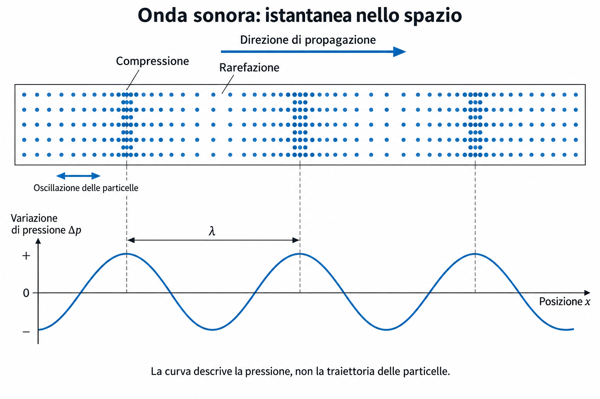
Le particelle del mezzo si addensano nelle zone di compressione e si diradano in quelle di rarefazione, mentre la pressione oscilla lungo la direzione di propagazione.
Un equivoco frequente è credere che sia l’aria a viaggiare dalla sorgente all’orecchio: in realtà la membrana dell’altoparlante mette in moto le particelle che ha davanti, queste spingono quelle vicine, e la perturbazione avanza di strato in strato. Ogni particella si limita così a oscillare attorno alla sua posizione di equilibrio, mentre quello che davvero si allontana dalla sorgente è l’energia della vibrazione, che l’onda porta con sé.
Un esempio comune di onde trasversali è la propagazione delle onde sulla superficie dell’acqua. In queste onde, le particelle d’acqua si muovono perpendicolarmente alla direzione di propagazione dell’onda stessa. Quando si getta un sasso in uno stagno, si osservano onde che si propagano verso l’esterno formando cerchi concentrici, mentre le particelle d’acqua oscillano su e giù. Altri esempi includono:
onde elettromagnetiche (come la luce e le onde radio), dove i campi elettrici e magnetici oscillano perpendicolarmente alla direzione di propagazione;
onde su una corda: se si scuote una corda tesa su e giù, le onde viaggiano lungo la corda, ma il movimento delle particelle della corda è perpendicolare alla direzione dell’onda.
NotaDemo 1 — Le particelle oscillano, la perturbazione si sposta
Il codice disegna le particelle del mezzo in due istanti successivi: si vede che si spostano di poco attorno alla loro posizione mentre la perturbazione avanza. Serve a distinguere il moto delle particelle dal moto dell’onda.
Al primo avvio: Run → Run All Cells. Poi modificare la demo e rieseguirla con Shift + Invio. Apri in una scheda separata ↗
Osserva: confronta le linee verticali (posizioni di equilibrio) nei due istanti. Le particelle cambiano poco posizione, mentre i massimi di pressione si spostano. Il grafico sinusoidale è una rappresentazione della pressione, non una traiettoria “su e giù” dell’aria.
Avviso
Attenzione al modello. lo spostamento è volutamente ingrandito e le particelle sono ordinate in 1D. Nell’aria reale il moto microscopico è tridimensionale e disordinato; l’onda descrive la piccola perturbazione collettiva.
Velocità e propagazione nei diversi materiali
Le onde più semplici sono quelle sinusoidali, formate da creste e da ventri. Se facciamo riferimento alle onde sull’acqua, le creste sono zone in cui il livello dell’acqua è più alto rispetto alla superficie in quiete e i ventri sono zone in cui il livello è più basso. La distanza fra due creste successive (o ventri) è la lunghezza d’onda. Quando l’onda si propaga nell’acqua, i punti del liquido perturbati dall’onda hanno un movimento periodico lungo la verticale. Si chiama ampiezza dell’onda lo spostamento massimo di un punto dalla sua posizione di equilibrio.
Il periodo dell’onda è l’intervallo di tempo che intercorre fra il passaggio di due creste successive (o due ventri) per lo stesso punto. In un mezzo omogeneo l’onda si propaga con velocità costante; il periodo, che indichiamo con \(T\), è il tempo che l’onda impiega a percorrere una lunghezza d’onda. Perciò la velocità dell’onda è:
\[v=\frac{\lambda}{T} \tag{1.1}\]
La frequenza dell’onda \(f\), invece, indica quante volte un punto dell’acqua oscilla in un secondo. Poiché la frequenza è il reciproco del periodo (\(f = 1/T\)), l’equazione Equazione 1.1 si riscrive come relazione fondamentale di un’onda:
\[v = \lambda f \tag{1.2}\]
Nella Figura si vede la rappresentazione schematica di un’onda sulla superficie dell’acqua. Le creste e i ventri corrispondono rispettivamente ai massimi e ai minimi spostamenti rispetto alla posizione di equilibrio. La lunghezza d’onda\(\lambda\) è la distanza tra due creste (o due ventri) successive, mentre l’ampiezza\(A\) è il massimo spostamento dalla posizione di equilibrio. Al passaggio dell’onda, i punti del mezzo oscillano periodicamente attorno alla propria posizione di equilibrio. Il periodo\(T\) è il tempo necessario affinché l’onda percorra una lunghezza d’onda, mentre la frequenza\(f=1/T\) indica il numero di oscillazioni nell’unità di tempo. La velocità di propagazione è quindi legata a frequenza e lunghezza d’onda dalla relazione fondamentale \(v=\lambda/T=f\lambda\).
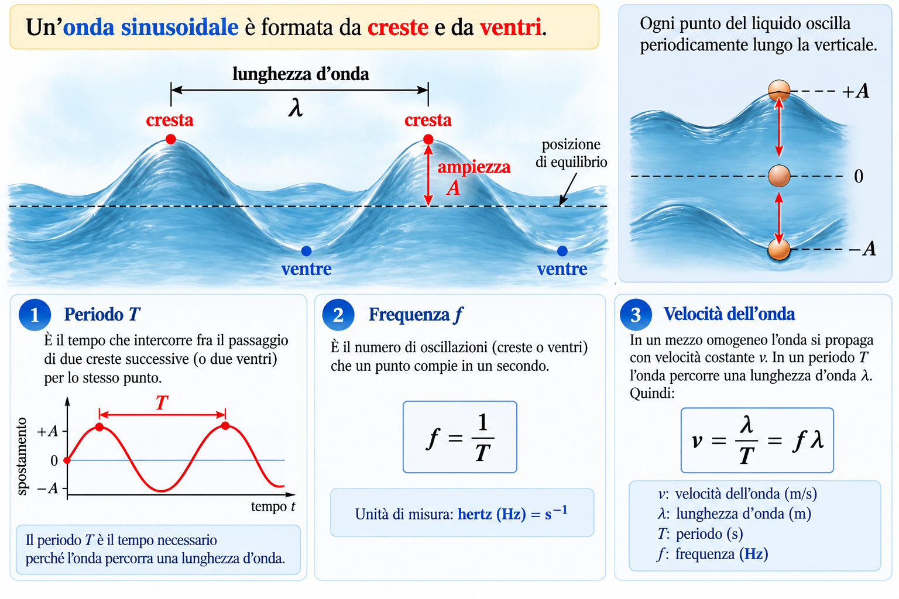
Ricordiamo qui brevemente come la legge del moto lega spazio, tempo e velocità:
\[v = \frac{s}{t} \qquad [\text{m/s}]\]
Nel caso di un’onda periodica, lo spazio percorso in un periodo \(T\) è una lunghezza d’onda \(\lambda\), quindi:
\[v = \frac{\lambda}{T} = \lambda f\]
dove \(v\) è in m/s, \(\lambda\) in metri, \(f\) in hertz (\(\text{s}^{-1}\)) e \(T\) in secondi.
La legge del moto descrive il come dell’onda; il perché risiede nelle leggi di Newton. In particolare, la seconda legge \(F = ma\), applicata a una forza elastica di richiamo (\(F = -kx\)), genera il moto armonico semplice delle particelle del mezzo; la terza legge (azione e reazione) ne consente la propagazione attraverso le particelle contigue.
Nell’immagine seguente, le grandezze con le unità di misura sono indicate esplicitamente.
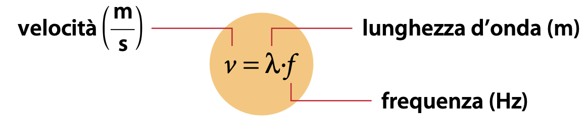
Il diagramma seguente invece mostra in forma grafica la relazione fra la lunghezza d’onda e la frequenza nel campo dell’udibile, cioè fra 20 e 20000 Hz (intervallo di notevole interesse applicativo poiché rappresenta l’intervallo di udibilità dell’Uomo medio)
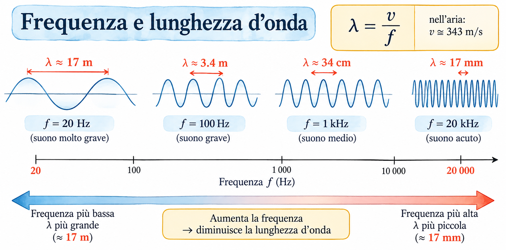
Si osservi come a 20 Hz, frequenza minima udibile, la lunghezza d’onda corrispondente sia di \(17\,m\), mentre a \(20.000\,Hz\) è di \(17\,mm\). Queste dimensioni sono importanti nel valutare le interazioni che le onde acustiche hanno con la materia.
Domanda: quanto è lungo un ciclo? Esempio: in aria a 343 m/s, un La a 440 Hz misura 78 cm; a 20 Hz, cioè la soglia grave dell’udibile, ben 17 metri.
Mostra la risposta
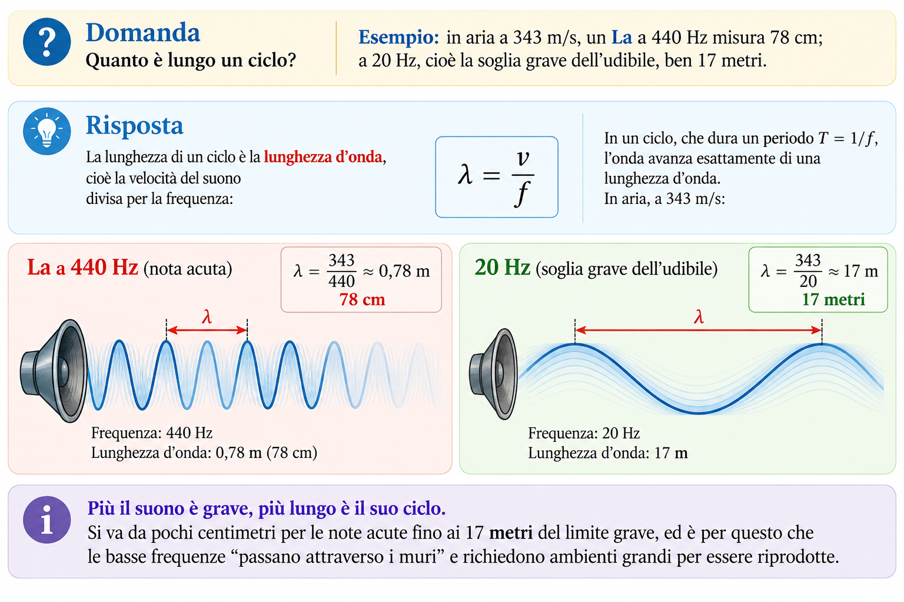
La lunghezza di un ciclo è la lunghezza d’onda: \(\lambda = v/f\), la velocità del suono divisa per la frequenza. Un ciclo dura un periodo \(T = 1/f\) e in quel tempo l’onda avanza esattamente di una lunghezza d’onda.
In aria, a 343 m/s: un La a 440 Hz occupa \(343/440 \approx 0{,}78\,m\) (78 cm); a 20 Hz, la soglia grave dell’udibile, \(343/20 \approx 17\,m\). Più il suono è grave, più lungo è il ciclo: da pochi centimetri per le note acute fino ai diciassette metri del limite grave.
Il suono può propagarsi in vari mezzi, e le sue caratteristiche variano in base alla natura del mezzo attraversato:
Nei gas (come l’aria): la velocità del suono dipende dalla temperatura e dalla densità del gas. Più alta è la temperatura, maggiore è la velocità del suono, poiché le particelle si muovono più velocemente e trasferiscono l’energia delle onde sonore in modo più efficiente.
Nei liquidi (come l’acqua): la velocità del suono è generalmente superiore rispetto ai gas, poiché le molecole sono più vicine tra loro, facilitando la trasmissione delle onde sonore. Nell’acqua, ad esempio, la velocità del suono è di circa 1500 metri al secondo, quasi quattro volte superiore rispetto all’aria.
Nei solidi (come i metalli o il legno): nei materiali solidi, le particelle sono ancora più vicine rispetto ai liquidi, quindi il suono si propaga con una velocità ancora maggiore. Ad esempio, nel ferro la velocità del suono può raggiungere circa 5000 metri al secondo.
Nella tabella si riportano alcuni valori della velocità \(v\) in m/s per alcune sostanze a temperatura ambiente.
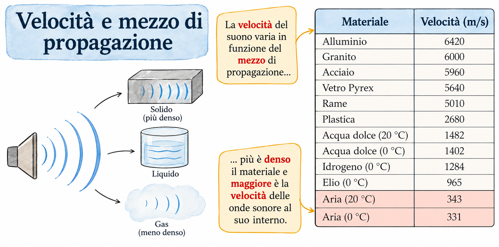
NotaRegola pratica
In aria, a temperatura ambiente, la velocità del suono è di circa 343 m/s. Un valore che torna utile in molti calcoli: in un decimo di secondo il suono percorre circa 34 metri.
NotaDemo 2 — Frequenza, periodo e lunghezza d’onda
Dato un tono, il codice calcola periodo e lunghezza d’onda e li confronta con l’istantanea dell’onda nello spazio. Lega così le tre grandezze con un esempio numerico.
Al primo avvio: Run → Run All Cells. Poi modificare la demo e rieseguirla con Shift + Invio. Apri in una scheda separata ↗
Predizione prima di muovere il cursore: nello stesso mezzo, se \(f\) raddoppia, \(T\) e \(\lambda\) si dimezzano; la velocità resta (circa) invariata. La velocità è quella del fronte d’onda, non la velocità di oscillazione delle particelle.
Riflessione, rifrazione e diffrazione
Le onde sonore possono subire vari fenomeni fisici quando incontrano ostacoli o cambiano mezzo:
Riflessione: avviene quando un’onda sonora colpisce una superficie e viene rimandata indietro. Questo fenomeno è alla base dell’eco. Quando un’onda sonora colpisce una superficie dura, come una parete di cemento, parte dell’energia viene riflessa, mentre il resto viene assorbito o trasmesso.
Rifrazione: si verifica quando un’onda sonora passa da un mezzo all’altro e cambia velocità, causando una deviazione della sua traiettoria. Questo effetto è evidente nell’acqua, dove i suoni possono sembrare più vicini o lontani in base alla temperatura e alla densità del mezzo.
Diffrazione: è il fenomeno per cui un’onda sonora riesce ad aggirare un ostacolo o a propagarsi attraverso un’apertura, permettendo di sentire suoni anche se non si trova direttamente in linea con la sorgente sonora.
Quando un’onda sonora che si sta propagando in un mezzo materiale incontra la superficie di separazione di un altro mezzo, si possono verificare tre fenomeni: l’onda si riflette; l’onda si trasmette nel secondo mezzo; l’onda viene assorbita dal secondo mezzo. In genere i tre fenomeni sono presenti contemporaneamente, però uno solo prevale sugli altri due e perciò si parla di riflessione, trasmissione o assorbimento del suono. Per esempio, l’onda sonora che incide su una parete rocciosa viene riflessa e il suono resta nello stesso mezzo da cui proviene. Le onde sonore possono essere trasmesse attraverso un mezzo; per esempio, in un appartamento il suono è trasmesso attraverso le pareti, i pavimenti, le porte. Infine, se il suono arriva su un materiale che non possiede le caratteristiche di elasticità necessarie, non riesce a propagarsi e in questo caso prevale l’assorbimento. I materiali che si comportano in questo modo sono detti materiali fonoassorbenti. Alcuni esempi di materiali fonoassorbenti sono la moquette, la lana di vetro, il sughero.
Se l’onda sonora incide in direzione perpendicolare alla superficie riflettente torna indietro nella stessa direzione. Se invece la direzione di propagazione dell’onda incidente non coincide con la perpendicolare alla superficie riflettente, l’onda riflessa si propaga in una direzione che forma con la stessa perpendicolare un angolo \(r\) uguale a quello di incidenza \(i\) (vedi figura).
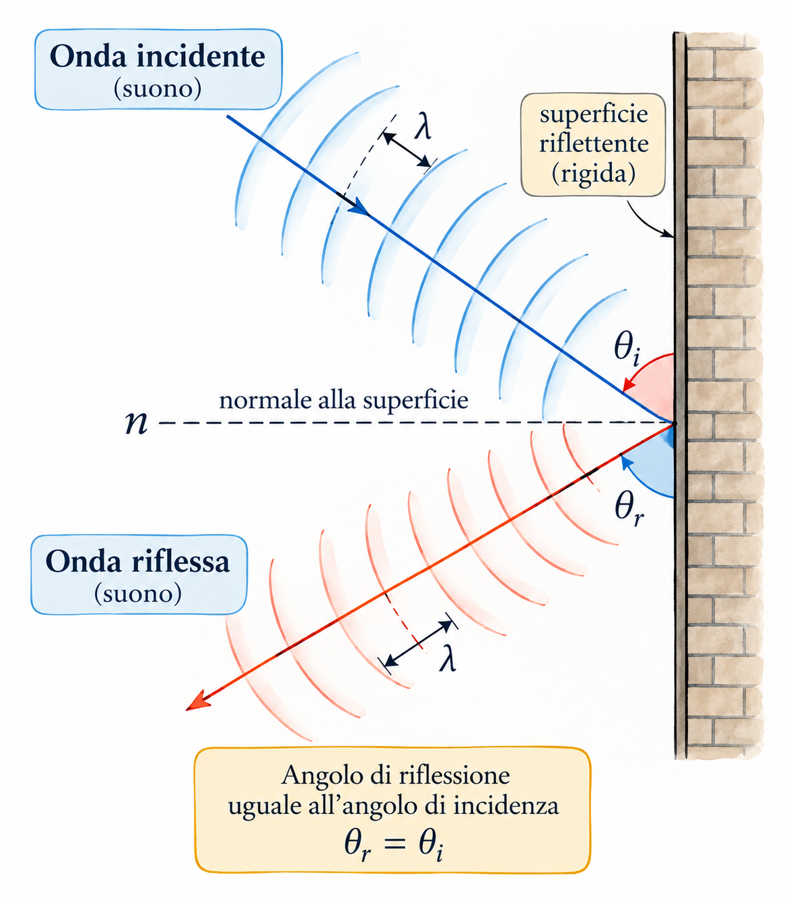
La velocità dell’onda incidente è uguale a quella dell’onda riflessa, perché l’onda viaggia nello stesso mezzo. Poiché la frequenza è fissa, per l’equazione dell’onda \(v = \lambda f\). Questo ci assicura che la lunghezza dell’onda riflessa è identica alla lunghezza d’onda incidente. L’eco è l’esempio più noto di riflessione di onde sonore. Quando lanciamo un grido davanti a una parete verticale posta a opportuna distanza, la parete riflette una parte dell’onda acustica lungo la direzione di incidenza. Dopo qualche istante riceviamo il grido di ritorno, cioè l’eco. Poiché la velocità del suono è costante, il tempo che impiega per andare e tornare dalla parete riflettente si calcola con la formula:
\[t=\frac{2D}{v} \tag{1.3}\]
dove \(D\) è la distanza della parete (vedi figura).
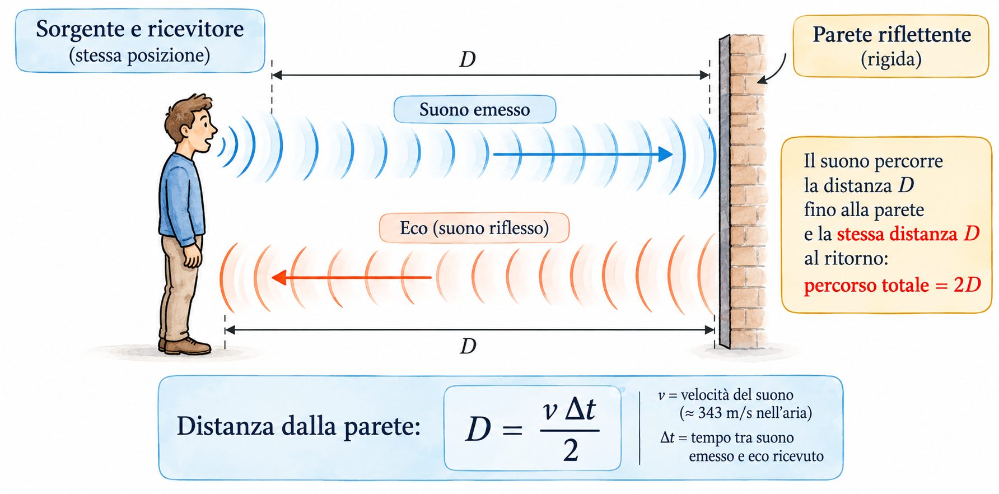
Perché in una normale stanza non sentiamo l’eco? Per spiegare questo fatto bisogna tener presente che l’orecchio umano distingue due suoni solo se essi gli giungono distanziati nel tempo di almeno un decimo di secondo. Perciò il suono incidente e quello riflesso sulla parete saranno percepiti come distinti solo se il tempo impiegato dal suono per andare e tornare dalla parete è maggiore di un decimo di secondo. Con una velocità di 340 m/s, in un decimo di secondo il suono percorre 34 m: sotto questa distanza i due suoni si fondono, ed è quello che accade in una stanza normale.
NotaDemo 3 — Suono diretto e riflesso
Il codice somma a un suono una sua copia ritardata, con ampiezza controllata dal peso della riflessione. Cambiando il ritardo si passa dal rinforzo all’eco distinta: è il meccanismo di base di ogni riverbero.
Al primo avvio: Run → Run All Cells. Poi modificare la demo e rieseguirla con Shift + Invio. Apri in una scheda separata ↗
La percezione del suono e la psicoacustica
La percezione del suono coinvolge sia la fisica che la biologia. Il nostro sistema uditivo è progettato per captare onde sonore e convertirle in segnali nervosi interpretati dal cervello. Il modo in cui percepiamo il suono è influenzato da molteplici fattori, tra cui:
Intensità: il volume percepito dipende dall’ampiezza dell’onda sonora. Tuttavia, il nostro orecchio non percepisce le variazioni di intensità in modo lineare, poiché è più sensibile a certe frequenze (specialmente tra i 2.000 e i 5.000 Hz).
Frequenza: le frequenze comprese tra 20 Hz e 20.000 Hz sono quelle che l’orecchio umano è in grado di percepire. Tuttavia, con l’età, la capacità di udire le frequenze più alte tende a diminuire.
Timbro: è la caratteristica del suono che ci permette di distinguere tra diversi strumenti musicali, anche se suonano la stessa nota. Il timbro dipende dalla presenza di armoniche e dal modo in cui si combinano con la frequenza fondamentale.
La fisica del suono rappresenta una combinazione affascinante di principi scientifici e applicazioni pratiche, che spaziano dalla musica all’ingegneria acustica, dalla medicina alla tecnologia delle comunicazioni. Comprendere questi principi fondamentali è il primo passo per esplorare in profondità il mondo dell’acustica e le sue infinite possibilità.
1.4 Le grandezze del suono
Ampiezza, periodo, frequenza e fase
Ogni suono periodico si descrive con poche grandezze, e conviene fissarle subito perché torneranno in tutto il resto del corso.
Ampiezza (\(A\)): lo spostamento massimo dalla posizione di equilibrio. È legata all’energia trasportata dall’onda, quindi alla sensazione di intensità.
Periodo (\(T\)): la durata di un ciclo completo, misurata in secondi.
Frequenza (\(f\)): il numero di cicli al secondo, misurata in hertz (Hz). Vale \(f = 1/T\).
Fase (\(\phi\)): lo scostamento dell’onda rispetto all’origine, misurato in radianti o in gradi. Da sola la fase di un segnale non dice molto, ma diventa essenziale quando si confrontano due segnali, per esempio i due canali di una registrazione stereo.
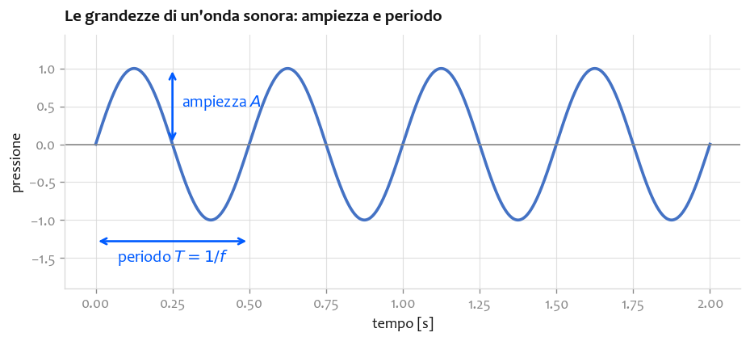
La forma più semplice di queste grandezze è l’onda sinusoidale, descritta da:
\[s(t) = A \sin(2\pi f t + \phi) = A \sin(\omega t + \phi) \tag{1.4}\]
dove \(\omega = 2\pi f\) è la frequenza angolare, espressa in radianti al secondo.
NotaDemo 4 — Separare gli effetti dei tre parametri
Tre sinusoidi costruite variando una sola grandezza per volta: la prima ha ampiezza doppia, la seconda frequenza diversa, la terza fase diversa. Il confronto mostra che effetto ha ciascun parametro sulla forma d’onda.
Al primo avvio: Run → Run All Cells. Poi modificare la demo e rieseguirla con Shift + Invio. Apri in una scheda separata ↗
In particolare, se l’ampiezza è la stessa, e variamo la frequenza della sinusoide, il periodo cambia e quindi il numero di oscillazioni che si osservano in un intervallo di tempo fisso. La figura seguente mostra tre sinusoidi con la stessa ampiezza ma frequenze diverse.
NotaDemo 14 — Stessa ampiezza, frequenze diverse
Le stesse tre sinusoidi a 220, 440 e 880 Hz, con la stessa ampiezza. Confrontando forma d’onda e ascolto si vede che raddoppiare la frequenza significa salire di un’ottava.
Al primo avvio: Run → Run All Cells. Poi modificare la demo e rieseguirla con Shift + Invio. Apri in una scheda separata ↗
Le tre frequenze sono una l’una il doppio dell’altra (220, 440, 880 Hz: due ottave). L’ampiezza numerica è identica nei tre pannelli; l’unica differenza visibile è quante oscillazioni entrano nella stessa finestra di 20 ms.
NotaDemo 4 bis — Stessa ampiezza, frequenze diverse
Confrontiamo tre toni puri a 220, 440 e 880 Hz, tutti con ampiezza digitale 0,15. Il grafico mostra 20 ms; ogni ascolto dura un secondo, con brevi rampe ai bordi per evitare click.
Prevedi: quale tono completa più cicli nello stesso intervallo? Come cambia il periodo quando la frequenza raddoppia?
Al primo avvio: Run → Run All Cells. Poi modificare la demo e rieseguirla con Shift + Invio. Apri in una scheda separata ↗
Osserva e spiega: raddoppiando la frequenza, il periodo si dimezza e il tono sale di un’ottava. L’ampiezza resta invariata. La stessa ampiezza digitale non garantisce la stessa sonorità percepita: contano anche la risposta del dispositivo e la sensibilità dell’orecchio alle diverse frequenze.
Potenza, intensità e pressione sonora
ConsiglioApprofondimento — le grandezze fisiche del suono
La fisica elementare introduce i concetti di energia, potenza, forza, pressione e intensità, con particolare attenzione alle loro definizioni e applicazioni.
Energia
L’energia è la capacità di un sistema di compiere lavoro o di produrre cambiamenti nel sistema stesso o nell’ambiente circostante. È una grandezza scalare e può assumere diverse forme, come energia cinetica (associata al movimento), energia potenziale (associata alla posizione in un campo di forza), energia termica, elettrica, chimica, ecc. - L’unità di misura dell’energia nel Sistema Internazionale (SI) è il joule (\(J\)). - Esempio: l’energia immagazzinata in una molla compressa è un esempio di energia potenziale, mentre l’energia che possiede un oggetto in movimento è energia cinetica.
Potenza
La potenza è la quantità di energia trasferita o convertita per unità di tempo. In altre parole, misura la velocità con cui viene compiuto il lavoro o viene trasformata l’energia. - L’unità di misura della potenza è il watt (\(W\)), dove \(1\) watt equivale a \(1\) joule al secondo (\(1\,W = 1\,J/s\)). - Esempio: una lampadina da 60 watt consuma 60 joule di energia ogni secondo per illuminare.
Forza
La forza è un’azione che può causare l’accelerazione di un oggetto con massa. È una grandezza vettoriale, il che significa che ha una direzione e un’intensità. Le forze possono provocare il movimento di un corpo, modificarne la velocità o deformarlo. - L’unità di misura della forza è il newton (\(N\)), dove \(1\) newton è definito come la forza necessaria per accelerare un chilogrammo di massa di un metro al secondo quadrato (\(1\,N = 1\,kg\cdot m/s^2\)).
Pressione
La pressione è la forza esercitata per unità di superficie. È una grandezza scalare che indica quanto intensamente una forza è distribuita su una determinata area. - L’unità di misura della pressione è il pascal (\(Pa\)), dove \(1\) pascal equivale a \(1\) newton per metro quadrato (\(1\,Pa = 1\,N/m^2\)).
Intensità
L’intensità è una misura della potenza trasferita per unità di area. Nella fisica del suono, l’intensità acustica rappresenta la potenza dell’onda sonora che attraversa un’unità di superficie perpendicolare alla direzione di propagazione. - L’unità di misura dell’intensità è il watt per metro quadrato (\(W/m^2\)).
Questi concetti sono collegati tra loro: la forza può generare pressione, l’energia può essere trasferita attraverso la potenza, e l’intensità può descrivere l’energia trasportata per unità di superficie.
L’intensità è energia che attraversa una superficie. Detta così sembra astratta, ma è la definizione che serve per capire tutte le misure del capitolo: l’energia trasportata dall’onda attraversa una superficie unitaria nell’unità di tempo. Da qui discendono due conseguenze che useremo spesso: l’intensità diminuisce con il quadrato della distanza da una sorgente puntiforme, perché la stessa energia si distribuisce su una superficie sempre più grande; e il livello in decibel si calcola proprio da questo rapporto di intensità.
L’ampiezza dell’oscillazione è il parametro più significativo per l’intensità di un suono, cioè l’energia trasportata dall’onda. L’ampiezza di un suono viene misurata in un certo punto dello spazio interessato al passaggio dell’onda. Le particelle d’aria sulla traiettoria dell’onda oscillano rispetto alla posizione di equilibrio: maggiore è l’energia trasportata dall’onda, maggiore sarà lo spostamento della particella d’aria. Una misurazione intuitiva dell’ampiezza è data quindi dall’entità dello spostamento di una particella d’aria nel punto considerato. Tuttavia, questo tipo di misura dà luogo a inconvenienti, in quanto è molto piccola per la maggior parte dei suoni ordinari e la strumentazione non riesce a rilevarla. Esistono altri due tipi di misura a cui si fa di solito riferimento, e che sono strettamente legati: uno è la pressione sonora dell’aria dovuta alla compressione e rarefazione delle particelle (si parla di livello di pressione sonora, o Sound Pressure Level, SPL), l’altro è l’intensità sonora dovuta all’energia trasportata dall’onda sonora (si parla di livello di intensità sonora, o Sound Intensity Level, SIL).
Partiamo dalla pressione sonora. La misura dell’ampiezza di pressione prende in esame la variazione di pressione dell’aria (rispetto alla pressione atmosferica) dovuta a un’onda sonora. Il silenzio puro corrisponde alla pressione atmosferica, la quale varia in modo così lento rispetto all’intervento di un’onda sonora da poter essere considerata una costante; un qualsiasi suono causa una variazione di pressione rilevabile. Anche in questo caso la grandezza misurata è irrisoria rispetto alla pressione atmosferica a cui siamo abituati (le variazioni si aggirano intorno a un milionesimo, cioè \(1/1.000.000\), della pressione atmosferica). Nonostante ciò, tale quantità è facilmente misurabile con i diaframmi dei microfoni, che, come il timpano dell’orecchio, sono molto sensibili anche a differenze minime di pressione.
Per avere un’idea intuitiva della pressione, si pensi che la forza esercitata da un carico di ½ kg corrisponde a circa 5 newton, diretti verso il basso. Se una forza viene applicata a una superficie, la sua efficacia diminuisce con l’aumentare della superficie, in quanto i newton applicati vanno divisi per i metri quadri. Un esempio classico è dato dal confronto della pressione esercitata su un pavimento da una donna con tacchi a spillo rispetto a un elefante (senza calzature!). Il peso (la forza) di una donna di 50 kg, cioè circa 500 newton, applicato a un’area di 2 cm² (\(0,0002\,m^2\)) data dai tacchi a spillo opera una pressione di \(2.500.000\,N/m^2\) (\(500/0,0002\)). Il peso di un elefante di 1000 kg (circa 10.000 newton) viene invece applicato a un’area di \(0,1\,m^2\), causando una pressione di soli \(100.000\,N/m^2\) (\(10.000/0,1\)). La pressione operata dalla donna è 25 volte maggiore di quella operata dall’elefante: su un parquet in legno i tacchi a spillo provocheranno molti più danni della zampa di elefante.
Per comprendere qual è l’ampiezza di pressione per suoni che udiamo tutti i giorni, consideriamo il suono più debole e il suono più forte che una persona media riesce ad ascoltare (soglie di udibilità). Da studi statistici su vaste porzioni di popolazione, la soglia minima dell'udibilità si aggira intorno a \(0,000025\,N/m^2\) (\(2,5\times 10^{-5}\)). La soglia, che come vedremo dipende dalla frequenza, è calcolata per un’onda sinusoidale (tono puro) a una frequenza di 1000 Hz. Il confronto con la pressione atmosferica salta subito all’occhio: \(0,000025\,N/m^2\) rispetto a \(100.000\,N/m^2\) significa che il più debole segnale udibile corrisponde a una percentuale irrisoria della pressione atmosferica (\(0,00000025\%\)). All’altro estremo, la soglia del dolore, in cui il suono è così forte da procurare danni irreparabili al timpano, corrisponde a una pressione di circa \(30\,N/m^2\), cioè un milione di volte più grande della soglia minima di udibilità. Tuttavia, il rapporto con la pressione atmosferica è di nuovo irrisorio (circa \(0,03\%\)): anche i suoni più forti arrivano a variazioni di pressione che non vanno oltre pochi centesimi in percentuale rispetto alla pressione atmosferica.
NotaDemo 10 — La stessa potenza si distribuisce su sfere più grandi
Una sorgente di potenza fissata irradia su sfere sempre più grandi: il codice calcola come cala l’intensità con la distanza e quanto vale il calo in decibel. È il fondamento della legge dell’inverso del quadrato.
Al primo avvio: Run → Run All Cells. Poi modificare la demo e rieseguirla con Shift + Invio. Apri in una scheda separata ↗
Regola pratica: raddoppiare la distanza divide l’intensità per 4 e riduce il livello di circa \(10\log_{10}(1/4)\approx-6.02\) dB.
Il livello sonoro in decibel
Poiché il rapporto tra un suono appena udibile e un suono alla soglia del dolore è così elevato (circa un milione), conviene schiacciare in qualche modo la scala di riferimento, per avere un’idea significativa delle grandezze relative in gioco. Introduciamo quindi una scala logaritmica, il Livello di Pressione Sonora (Sound Pressure Level, SPL), basata sul rapporto tra due suoni e misurata in decibel:
0 dB non è assenza di suono. Il livello, misurato in dB SPL, si misura rispetto alla soglia di udibilità, quindi 0 dB SPL indica il suono più debole che un orecchio sano percepisce, non il silenzio assoluto. Valori negativi sono possibili e comuni.
La scala dei decibel è una scala relativa, nella quale cioè un suono viene misurato in rapporto a un suono di riferimento: \(p\) è la pressione del suono da misurare, \(p_0\) è la pressione del suono di riferimento, che corrisponde alla soglia minima di udibilità appena definita. Del rapporto tra \(p\) e \(p_0\) si prende il logaritmo e si moltiplica per 20. Il logaritmo del rapporto si definisce come bel (da Alexander Graham Bell); la moltiplicazione per 20 va letta come una moltiplicazione per 10 e poi per 2. La moltiplicazione per 10 esprime la stessa quantità in decibel (così come i metri si esprimono in decimetri moltiplicando per 10). L’ulteriore moltiplicazione per 2 diventa chiara con il secondo metodo di misura dell’ampiezza, che considera l’intensità sonora legata all’energia trasportata dall’onda.
La \(p\) che compare nella formula è la pressione efficace del suono: si prendono le variazioni di pressione istante per istante, se ne calcola il quadrato e poi la media, e infine si estrae la radice quadrata (in inglese root mean square, da cui la sigla rms). Una media semplice non basterebbe: la pressione di un’onda oscilla tra compressioni e rarefazioni, sopra e sotto la pressione atmosferica, e valori positivi e negativi si annullerebbero a vicenda; i quadrati invece si sommano. Per un’onda sinusoidale la pressione efficace è la pressione massima divisa per \(\sqrt{2}\). Il riferimento \(p_0\) è fissato dalle norme internazionali a 20 micropascal (\(2\times10^{-5}\) Pa) in aria.
L’intensità sonora è una misura dell’energia trasportata dall’onda: come per l’intensità luminosa, è l’energia che passa attraverso una superficie unitaria (\(1\,m^2\)) per unità di tempo (1 s). Poiché l’energia al secondo si misura in watt, l’intensità si misura in \(W/m^2\). Nel caso dell’intensità sonora, la scala dei decibel, che assume il nome di Livello di Intensità Sonora (Sound Intensity Level, SIL), è data dalla relazione:
dove \(I\) è l’intensità del suono in questione e \(I_0\) è il valore di intensità del suono di riferimento. Si tratta di nuovo della soglia minima di intensità per un suono a 1000 Hz di frequenza, e vale \(10^{-12}\,Watt/m^2\). Poiché SPL e SIL sono valori calcolati in relazione alla soglia di udibilità, nella maggior parte dei suoni standard i due valori sono identici: non entriamo nei dettagli, ma è opportuno sapere che i due valori differiscono dal punto di vista dell’interpretazione fisica. La pressione è il risultato di onde che arrivano da molteplici direzioni, mentre l’intensità viene definita per una direzione di flusso dell’energia e una superficie attraversata. Il motivo per avere entrambe le misure è che a volte conviene lavorare con l’intensità e altre volte con la pressione.
Perché due fattori diversi, 20 per la pressione e 10 per l’intensità, danno lo stesso risultato? Perché l’intensità cresce con il quadrato della pressione, e davanti a un logaritmo il quadrato diventa un fattore 2: \(\log_{10}(p^2/p_0^2) = 2\log_{10}(p/p_0)\), e quindi \(2 \times 10 = 20\). La scala della pressione contiene così già in sé il quadrato che la lega all’energia: per questo SPL e SIL attribuiscono praticamente lo stesso livello allo stesso suono.
Abbiamo visto che il decibel non è una quantità di suono, ma un rapporto tra due suoni; per avere una scala assoluta, il rapporto si determina in relazione a un suono sulla soglia dell’udibilità. Prendiamo ora tre suoni qualsiasi \(x\), \(y\) e \(z\). Se l’intensità del suono \(x\) è 10 volte maggiore dell’intensità del suono \(y\), allora la differenza tra i livelli di intensità dei due suoni è di 10 decibel (dB). Inoltre, se l’intensità del suono \(y\) è 10 volte maggiore dell’intensità del suono \(z\), allora la differenza tra i livelli di intensità dei due suoni è di nuovo di 10 dB. Infine, notiamo che l’intensità del suono \(x\) è 100 volte maggiore dell’intensità del suono \(z\), ma la differenza tra i livelli di intensità di \(x\) e \(z\) è solo di 20 dB: la scala logaritmica comprime i rapporti grandi.
ConsiglioApprofondimento facoltativo — La potenza si spande su superfici sempre più grandi
Che cosa succede al suono quando ci si allontana dalla sorgente? Immagina una lampadina accesa: la sua potenza non cambia mai, eppure la luce che arriva su un foglio lontano è più debole. Non è la lampadina a indebolirsi: è la stessa energia che si distribuisce su una superficie sempre più grande. Il suono si comporta allo stesso modo.
Potenza e intensità sono due cose diverse. La potenza\(P\), in watt, è una proprietà della sorgente: l’energia che emette ogni secondo, come la potenza stampata sulla confezione di una lampadina. L’intensità\(I\) è invece ciò che si misura a una certa distanza, e vale la potenza che attraversa ogni metro quadrato di superficie:
\[I = \frac{P}{A}\]
Si misura in watt per metro quadrato (\(W/m^2\)). Alla soglia dell’udibile l’intensità vale appena \(I_0 = 10^{-12}\ W/m^2\); alla soglia del dolore arriva a circa \(10\ W/m^2\): tredici ordini di grandezza, un altro buon motivo per usare i decibel. E poiché l’intensità cresce con il quadrato della pressione, dimezzare l’intensità significa dimezzare anche la pressione sonora.
Perché le sfere. Nello spazio libero il suono di una sorgente puntiforme si irradia in tutte le direzioni, e i suoi fronti d’onda sono sfere concentriche. A distanza \(r\) la superficie della sfera vale \(A = 4\pi r^2\), quindi
\[I = \frac{P}{4\pi r^2} \propto \frac{1}{r^2}\]
L’intensità diminuisce con il quadrato della distanza: se la distanza raddoppia, la stessa potenza deve coprire una superficie quattro volte più grande.
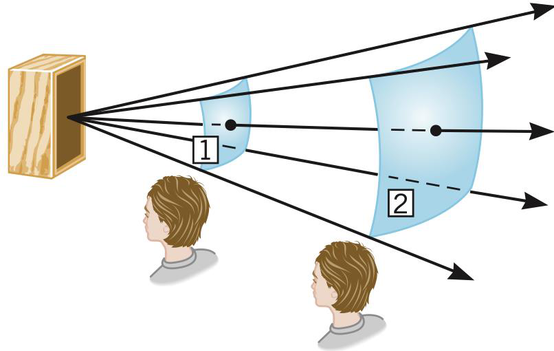
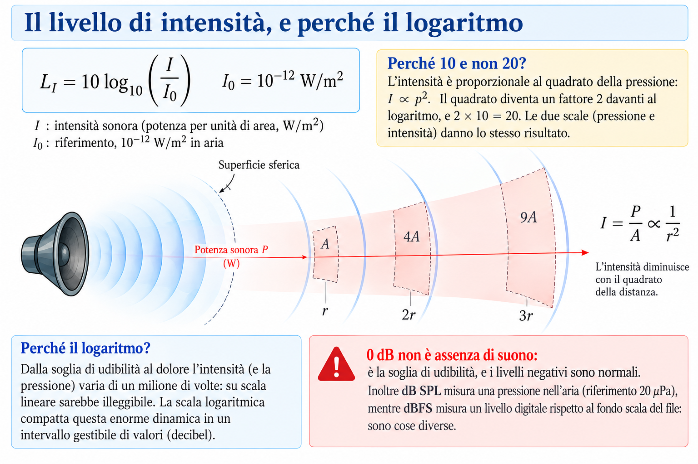
Esempio: la distanza raddoppia. La superficie diventa quattro volte più grande, l’intensità si divide per quattro e in decibel: \(\Delta L = 10 \log_{10}(1/4) \approx -6\,\text{dB}\). Un ascoltatore al doppio della distanza riceve 6 dB in meno, sia di intensità sia di pressione. Per questo un concerto si sente bene anche in fondo alla piazza.
Esempio: dieci volte più lontano. La superficie diventa cento volte più grande, e il livello scende di \(20\,\text{dB}\).
E con due sorgenti uguali? Due casse identiche con suoni non correlati sommano le potenze: l’intensità raddoppia e il livello sale di \(10 \log_{10}(2) \approx +3\,\text{dB}\), un aumento appena percettibile. Due sorgenti, insomma, non fanno il doppio del volume: per raddoppiare la sonorità percepita servono circa dieci sorgenti.
In pratica le cose non sono mai così simmetriche: pareti, oggetti e riflessioni rendono il campo sonoro irregolare, e la legge vale come punto di partenza, non come conto esatto.
Il decibel è quindi la scala con cui si misura l’ampiezza del suono in pratica. La figura seguente dà l’ordine di grandezza di alcuni suoni familiari.
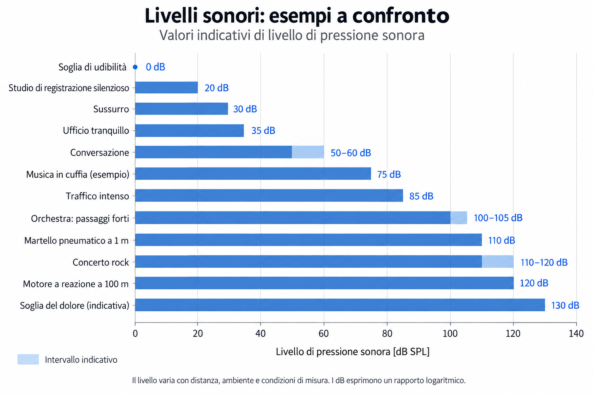
NotaDemo 11 — Rapporti fisici e differenze in dB
Il codice converte alcuni rapporti di ampiezza nei corrispondenti decibel: raddoppiare sono 6 dB, dieci volte sono 20, cento volte 40. Serve a prendere confidenza con la scala logaritmica.
Al primo avvio: Run → Run All Cells. Poi modificare la demo e rieseguirla con Shift + Invio. Apri in una scheda separata ↗
NotaDemo 12 — Una sorgente, due sorgenti non correlate
Il codice costruisce prima il segnale di una sola sorgente e poi la somma di più sorgenti non correlate: la potenza media della somma cresce approssimativamente con il numero di sorgenti, con fluttuazioni dovute alla durata finita dei segnali.
Al primo avvio: Run → Run All Cells. Poi modificare la demo e rieseguirla con Shift + Invio. Apri in una scheda separata ↗
Frequenza e altezza
La frequenza di un suono, cioè il numero di vibrazioni complete che la sorgente compie in un secondo, o alternativamente il numero di compressioni e rarefazioni che subisce una particella d’aria in un secondo, è la principale responsabile dell’altezza di un suono. L’altezza è il parametro legato alla sensazione di gravità o acutezza che si percepisce di un suono. Non tutti i suoni hanno un’altezza definita. L’altezza è una caratteristica che risulta dalla periodicità di un segnale, cioè dal fatto che il segnale ripeta lo stesso andamento per un certo tempo. Quando la periodicità si mantiene a lungo, l’altezza è ben definita e invariante, e il suono non induce generalmente errori di giudizio riguardanti la sua altezza. Il diapason approssima molto bene la produzione di questi suoni. I suoni per i quali si parla di altezza per eccellenza sono i suoni musicali di tipo periodico.
Questo spiega in parte la differenza che sussiste tra un suono puro e un suono complesso. Un suono puro (detto anche tono puro) è costituito da una sola frequenza ed è quindi descritto da un’onda sinusoidale semplice (figura sotto, in alto); l’andamento del segnale è molto arrotondato; il periodo è composto da una singola compressione e una singola rarefazione ben definite; l’ascolto non è particolarmente interessante. Un suono complesso consiste invece di più frequenze sommate in un’onda dall’andamento articolato (figura sotto, in basso); in un singolo periodo possono essere comprese più alternanze di compressioni e rarefazioni intermedie; l’ascolto rivela il timbro caratteristico di una sorgente e dell’ambiente circostante.
Come vedremo nei prossimi capitoli, un suono complesso qualsiasi contiene molte frequenze. Perché in un suono si possa individuare una frequenza speciale, detta fondamentale, che caratterizza la sensazione globale di gravità o acutezza trasmessa dal suono, occorre che il segnale sia periodico. Un’oscillazione periodica complessa può essere considerata come una somma di una serie di oscillazioni sinusoidali semplici, le cui frequenze costituiscono una progressione aritmetica: un segnale periodico si sviluppa come somma di (in)finiti termini armonicamente correlati, ciascuno caratterizzato da una frequenza multipla della frequenza fondamentale.
NotaDemo 5 — Frequenza fisica e altezza percepita
Il codice confronta la frequenza fisica con l’altezza percepita, usando ottave e semitoni. Serve a mostrare che la percezione degli intervalli è moltiplicativa, non additiva.
Al primo avvio: Run → Run All Cells. Poi modificare la demo e rieseguirla con Shift + Invio. Apri in una scheda separata ↗
Il timbro
Mentre l’altezza dipende dalla frequenza e l’intensità dall’ampiezza, il timbro è ciò che permette di riconoscere uno strumento: due strumenti che suonano la stessa nota, alla stessa intensità, restano distinguibili.
Il timbro dipende da quali armoniche accompagnano la fondamentale e da quanto sono forti, cioè dal profilo delle ampiezze relative.
Alcuni dei principali fattori che contribuiscono al timbro sono cinque.
Armoniche
Quando un oggetto vibra, genera una frequenza fondamentale, quella che percepiamo come altezza, e una serie di frequenze superiori multiple della prima. La distribuzione e l’intensità di queste armoniche creano un’impronta riconoscibile per ogni strumento o voce.
Forma dell’onda sonora
Sorgenti diverse producono onde con forme diverse (sinusoidale, triangolare, quadra). La forma influisce sul timbro e dà al suono una qualità propria.
Attacco e decadimento
Ogni suono ha una fase iniziale e una finale: la rapidità con cui inizia e finisce cambia il timbro. Un pianoforte ha un attacco rapido, un violino entra più dolcemente.
Risonanze
La struttura fisica di uno strumento amplifica alcune frequenze più di altre, e questa risonanza naturale contribuisce a renderlo unico.
Distorsione e rumore aggiuntivo
In alcuni strumenti il rumore fa parte del carattere del suono: il soffio di un flauto, le impurità di una tromba. Toglierlo del tutto renderebbe il suono più povero, non più fedele.
La figura seguente mostra lo stesso suono nel tempo e in frequenza in due casi: un tono puro e un suono con armoniche.
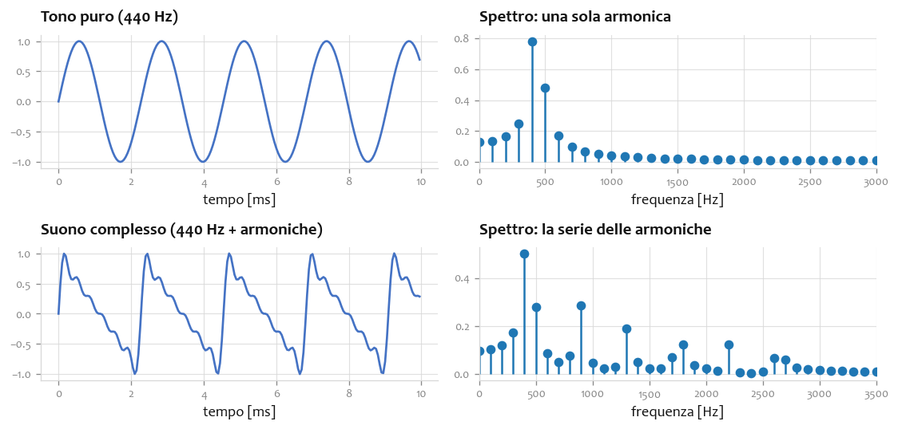
Cambiando il profilo delle armoniche cambia lo strumento percepito, anche se la nota è la stessa. Gli esempi qui sotto usano la stessa frequenza fondamentale di 220 Hz con tre profili diversi.
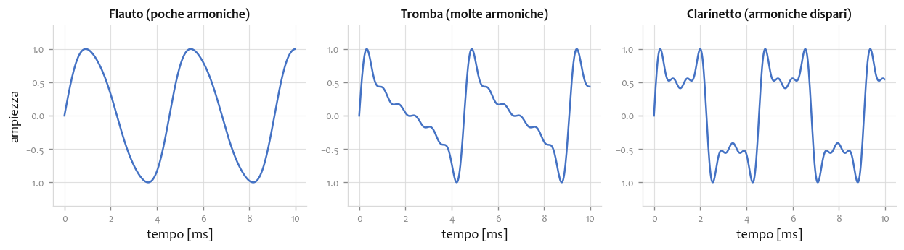
NotaDemo 9 — Stessa fondamentale, timbro diverso
Stesso periodo e stessa fondamentale, ma contenuto armonico diverso: il codice costruisce due suoni e ne confronta lo spettro. È la differenza fra un tono puro e un suono reale.
Al primo avvio: Run → Run All Cells. Poi modificare la demo e rieseguirla con Shift + Invio. Apri in una scheda separata ↗
Venti micropascal corrispondono alla pressione rms di un tono a 1 kHz appena percepibile, ed è il valore di riferimento fissato dalle norme internazionali per il livello di pressione sonora in aria.
NotaDa ricordare
Altezza, intensità e timbro sono le tre qualità percettive del suono, e corrispondono a tre proprietà fisiche distinte: la frequenza, l’ampiezza e la composizione in armoniche.
L’intervallo udibile
L’orecchio umano non percepisce tutte le frequenze: il campo di udibilità si estende da circa 20 Hz a circa 20.000 Hz. Sotto i 20 Hz si parla di infrasuoni, sopra i 20 kHz di ultrasuoni; in entrambi i casi la membrana basilare non entra in risonanza e non c’è sensazione uditiva.
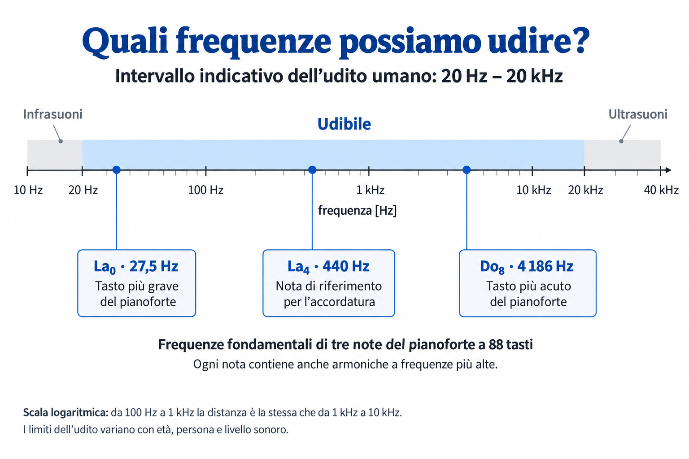
La sensibilità non è uniforme all’interno dell’intervallo: siamo più sensibili alle frequenze comprese tra 2.000 e 5.000 Hz, e molto meno alle basse frequenze, che per essere udite devono avere un’ampiezza maggiore. Questo è il motivo per cui la soglia di udibilità, di cui parleremo nel dettaglio più avanti, non è una linea retta ma una curva.
1.5 Onde e produzione del suono
Onde sinusoidali
Una funzione sinusoidale è una rappresentazione matematica di un’onda periodica che può essere utilizzata per descrivere fenomeni oscillatori come il suono, la luce o le onde meccaniche. La forma generale di una funzione sinusoidale nel tempo è l’equazione Equazione 1.4, che riscriviamo indicando il significato di ogni termine:
\[s(t)=A \sin(2\pi f t + \phi) = A\sin(\omega t + \phi)\]
\(s(t)\) rappresenta il valore dell’onda al tempo \(t\).
\(A\) è l’ampiezza della funzione. L’ampiezza rappresenta il massimo valore assoluto raggiunto dalla funzione sinusoidale rispetto alla sua posizione di equilibrio (o valore medio). È una misura dell’intensità o energia dell’onda.
\(\omega\) è la frequenza angolare, espressa in rad/s, e si collega alla frequenza ordinaria \(f\) tramite la relazione \(\omega=2\pi f\).
\(t\) è il tempo. Il tempo è la variabile indipendente della funzione sinusoidale e rappresenta la progressione dell’onda nel tempo. Man mano che il tempo avanza, la funzione sinusoidale oscilla tra i valori \(-A\) e \(+A\) con un andamento periodico.
\(\phi\) è la fase dell’onda, misurata in radianti. La fase iniziale indica lo scostamento dell’onda al tempo \(t=0\): se la fase è diversa da zero, l’onda inizia il suo ciclo in un punto diverso rispetto alla sinusoide standard.
La relazione che sussiste tra i parametri ci dice che la combinazione di ampiezza, frequenza e fase determina la forma e il comportamento della funzione sinusoidale. Ad esempio:
cambiando l’ampiezza, si altera l’altezza dell’onda;
cambiando la fase, si sposta l’onda verso sinistra o verso destra;
modificando la frequenza, si cambia la rapidità con cui l’onda completa i suoi cicli nel tempo.
L’insieme di questi parametri consente di descrivere accuratamente la natura e il comportamento di onde periodiche in molti ambiti della fisica del suono.
La produzione del suono
Come detto in precedenza, all’origine di un suono vi è sempre una vibrazione. Tutte le sorgenti sonore (incluse quelle musicali) vibrano: ogni vibrazione completa è detta ciclo. Facciamo riferimento al movimento di una corda fissata alle due estremità.
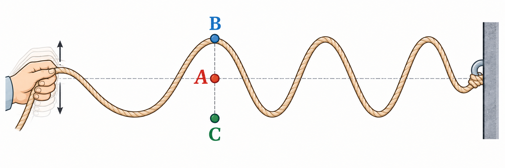
La corda parte da una posizione A (dove si trova a riposo) e si muove verso una direzione. Raggiunta la massima distanza dalla posizione di partenza (punto B), la corda ritorna verso la posizione di equilibrio A. Riprende quindi il cammino in direzione opposta alla precedente, raggiungendo la massima distanza nel punto C. Infine ritorna verso la posizione di partenza A, e tutto ricomincia. Ogni segnale sonoro comprende molti di questi cicli.
I moti di questo tipo in fisica sono detti moti oscillatori: si ha un moto oscillatorio quando una particella oscilla (o vibra) intorno a una posizione di equilibrio. Moti oscillatori sono il moto di un pendolo, il moto di un peso attaccato a una molla, il moto degli atomi in un corpo solido, il moto della corda in figura. Dei moti oscillatori, il più semplice e anche il più importante è il moto armonico semplice, che si ha quando la forza che riporta l’oggetto nella posizione di riposo è proporzionale allo spostamento dell’oggetto. Il pendolo e la massa attaccata a una molla sono tipici esempi di moto armonico semplice. Se oltre all’informazione sulla posizione della particella vogliamo rappresentare la successione delle variazioni della distanza dall’origine con la variazione dell’angolo a cui si trova la particella, occorre disegnare un diagramma cartesiano con una funzione trigonometrica, ad esempio il seno: il seno di un angolo, infatti, non è altro che la posizione della particella sull’asse verticale rispetto all’origine.
La funzione disegnata descrive quindi un movimento sinusoidale; il fenomeno ondulatorio connesso a tale vibrazione è detto onda seno. Tutta la scienza delle onde sonore è costruita a partire dalle onde sinusoidali. Inseriamo ora il tempo nelle nostre descrizioni. La particella in moto armonico, sia essa una corda o la punta di un diapason, si sposta nel tempo anche se ripete le stesse posizioni. Nella figura si suppone di vincolare un pennino alla punta di un diapason: vibrando, essa disegna nel tempo una curva sinusoidale (simile al funzionamento di un elettrocardiografo).
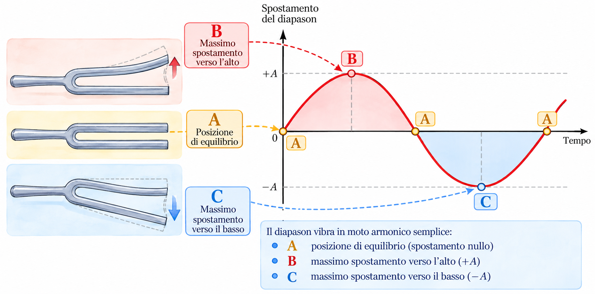
Quindi, se sull’asse orizzontale rappresentiamo il tempo, la curva che rappresenta la posizione della particella avrà lo stesso andamento sinusoidale. In particolare, l’angolo che corrisponde alla posizione della particella in un certo istante di tempo dipende dalla velocità della vibrazione. Nella figura vengono rappresentate le caratteristiche importanti dell’oscillazione nel tempo. Innanzitutto l’ampiezza dell’oscillazione: maggiore è la distanza percorsa dalla particella allontanandosi dalla posizione di equilibrio, maggiore è l’intensità sonora. Suoni deboli (un bisbiglio) compiranno oscillazioni molto vicine alla posizione di equilibrio; suoni forti (un’esplosione) compiranno ampie oscillazioni intorno alla posizione di equilibrio.
La velocità con cui la particella oscilla, cioè la velocità di rotazione sul cerchio, si misura con il numero di cicli che la particella completa nell’unità di tempo: questa grandezza è la frequenza \(f\), inverso del periodo \(T\). La frequenza è il fattore determinante per l’altezza di un suono: maggiore è la frequenza, più acuto è un suono. Per calcolare la frequenza occorre sapere quanti cicli (e frazioni di ciclo) sono stati completati in un secondo: questo calcolo necessita della nozione di fase di un segnale. La fase indica un istante preciso in un ciclo di un segnale, e un ciclo si considera completato tutte le volte che un segnale si presenta nella stessa fase. Poiché un ciclo consta di 360°, un modo per misurare la fase è l’angolo corrispondente all’istante di tempo considerato.
Non ha molto senso considerare la fase di un segnale sinusoidale isolato, ma è importante quando si analizzano le differenze tra più segnali. Se due (o più) onde hanno la stessa frequenza e raggiungono il massimo nello stesso istante, allora le onde si dicono in fase; se viceversa una è al minimo e l’altra è al massimo, le due onde si dicono in opposizione di fase, e presentano una differenza di fase di 180°. In generale, la fase è misurata in gradi di differenza tra le onde (ad esempio, 30°). La fase è particolarmente importante nella spazializzazione del suono, in quanto permette di esprimere una delle differenze che caratterizzano i due segnali percepiti alle due orecchie, ma che riguardano la stessa sorgente sonora.
Oltre al periodo, un altro modo alternativo di caratterizzare la velocità di oscillazione di un segnale è la nozione di lunghezza d’onda. La lunghezza d’onda è la distanza tra due punti identici in cicli adiacenti di un segnale. Nel caso delle onde sonore, è la distanza tra due particelle d’aria che si trovano nella stessa fase in cicli adiacenti. Si misura quindi in metri e centimetri. La lunghezza d’onda è inversamente proporzionale alla frequenza: maggiore è la frequenza di un segnale, minore è la sua lunghezza d’onda.
Sovrapposizione, interferenza e battimenti
Per onde sufficientemente piccole vale la sovrapposizione lineare: le pressioni si sommano. Per due sinusoidi di uguale ampiezza e frequenza:
La fase relativa controlla l’ampiezza risultante: \(0\) rad costruzione; \(\pi\) rad cancellazione ideale.
NotaDemo 6 — Interferenza controllata dalla fase
Due copie dello stesso tono sommate in fase e in contro-fase: nella prima l’ampiezza raddoppia, nella seconda si annulla. Il codice produce anche l’ascolto, dove la differenza è evidente.
Al primo avvio: Run → Run All Cells. Poi modificare la demo e rieseguirla con Shift + Invio. Apri in una scheda separata ↗
Fisica reale: la cancellazione perfetta richiede stessa frequenza, stessa ampiezza e opposizione di fase nel punto di misura. Spostare il microfono cambia la distanza dalle sorgenti e quindi la fase relativa.
L’oscillazione rapida è circa alla frequenza media; l’inviluppo produce massimi di ampiezza con frequenza \(f_b=|f_2-f_1|\).
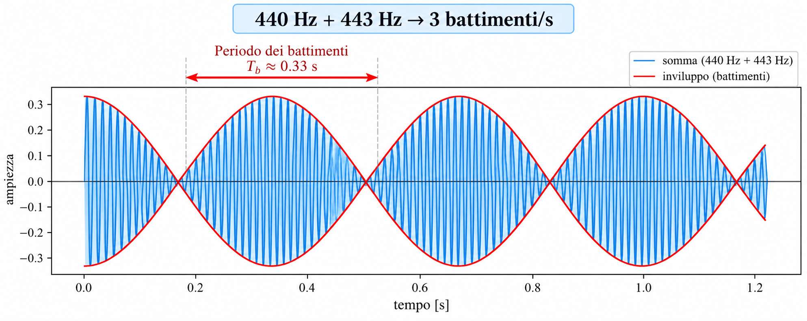
NotaDemo 7 — Vedere e ascoltare i battimenti
Due toni a 440 e 443 Hz sommati: il livello sale e scende tre volte al secondo. Il codice disegna il segnale e il suo inviluppo, e ne fa sentire il risultato.
Al primo avvio: Run → Run All Cells. Poi modificare la demo e rieseguirla con Shift + Invio. Apri in una scheda separata ↗
Onde stazionarie
C’è un caso di sovrapposizione ancora più interessante: le due onde non arrivano da sorgenti diverse, ma sono la stessa onda che torna indietro. Su una corda fissata agli estremi, l’onda che viaggia verso l’estremo si chiama onda incidente; quando lo raggiunge non può oltrepassarlo e viene riflessa: torna indietro capovolta, come onda riflessa. L’onda di ritorno ha la stessa frequenza e la stessa velocità di quella di andata, ma viaggia in verso opposto.
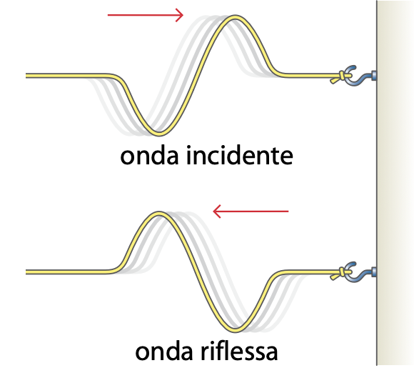
L’onda incidente e l’onda riflessa viaggiano allora lungo la stessa corda in versi opposti: dove si incontrano si sommano, e dall’interferenza fra le due nasce una figura che non si sposta, pur continuando a oscillare nel tempo. È l’onda stazionaria.
Su una corda fissata ai due estremi, lunga \(L\), l’onda stazionaria può esistere solo se sulla corda sta un numero intero di semilunghezze d’onda: gli estremi sono fissi per costruzione, e solo a questa condizione la figura si incastra fra le due pareti. Non tutte le frequenze sono quindi possibili: sono ammesse soltanto quelle che rispettano il vincolo.
Come mostra la figura seguente, La corda fissata ai due estremi può vibrare solo con un numero intero di semilunghezze d’onda: lungo la corda si alternano i punti che non si muovono mai, i nodi, e quelli che oscillano con lo spostamento massimo, gli antinodi. La distanza fra due nodi consecutivi è mezza lunghezza d’onda, ed è per questo che dalla posizione dei nodi si legge direttamente la forma del modo: nella figura della sezione, il modo più semplice ha due nodi agli estremi e un solo antinodo al centro.
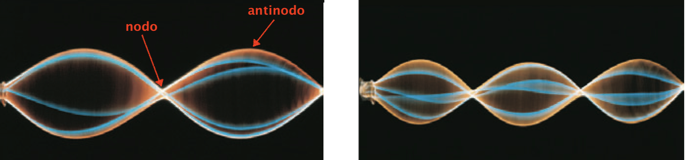
Il modo più semplice ha due nodi, gli estremi, e un solo antinodo, e corrisponde a una lunghezza d’onda doppia rispetto alla lunghezza della corda:
È la frequenza più bassa possibile, e si chiama fondamentale o prima armonica. I modi successivi sono le armoniche: il modo numero \(n\) ha \(n+1\) nodi e lunghezza d’onda pari alla \(n\)-esima parte della fondamentale, con una frequenza che è \(n\) volte la fondamentale.
Lo stesso meccanismo spiega gli strumenti a corda, ed è anche il motivo per cui hanno la forma che hanno.
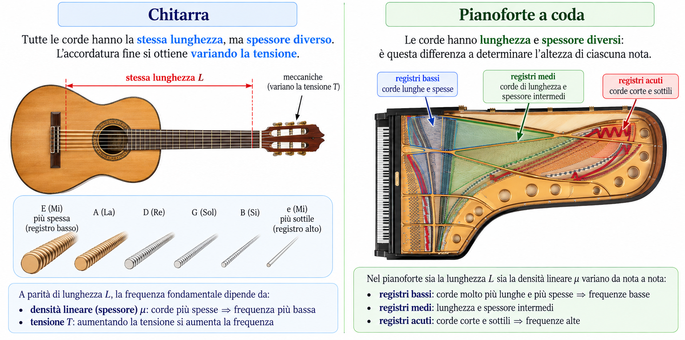
Nella chitarra tutte le corde hanno la stessa lunghezza: perché ciascuna abbia una frequenza fondamentale diversa si fa variare lo spessore, cioè la densità lineare della corda. L’accordatura fine si fa poi tendendo la corda, perché cambiare la tensione cambia la velocità delle onde e quindi l’altezza della nota. Nel pianoforte le corde hanno lunghezza e spessore diversi, ed è questa differenza a fissare l’altezza di ciascuna nota: è anche il motivo della forma allungata di un pianoforte a coda, che deve ospitare corde molto più lunghe per i registri bassi.
1.6 La forma d’onda e i canali
Che cos’è la forma d’onda
Finora abbiamo descritto il suono come un’onda di pressione. Quando lo misuriamo con un microfono otteniamo una forma d’onda: il grafico dell’ampiezza del segnale in funzione del tempo. È la rappresentazione più immediata di un segnale audio e quella che si vede in qualunque editor.
Da una forma d’onda si leggono a colpo d’occhio alcune cose:
dove il suono comincia e dove finisce, e quanto dura;
quanto è forte, cioè quanto si allontana dalla linea di riposo;
la dinamica, cioè il rapporto tra le parti forti e quelle deboli;
la presenza di silenzi, di pause e di attacchi;
eventuali tagli sulle creste, segno che il livello ha superato il fondo scala.
Non si leggono invece le frequenze presenti: per quelle serve l’analisi in frequenza, che affronteremo nel capitolo 3. Una forma d’onda composta da un solo tono puro e una composta da un accordo possono avere lo stesso aspetto esteriore.
Canali: mono, stereo, multicanale
Un segnale audio può essere registrato su uno o più canali:
mono: un solo canale, \(x[n]\);
stereo: due canali, \(x_L[n]\) e \(x_R[n]\);
multicanale: 5.1, 7.1, ambisonics, per il suono immersivo.
I due canali di una registrazione stereo non sono mai identici: differiscono per ampiezza e per fase. Sono proprio queste differenze a creare l’immagine spaziale, cioè la posizione da cui percepiamo arrivare i diversi strumenti. Anche piccoli ritardi tra i canali, dell’ordine di qualche millisecondo, spostano la sensazione della sorgente.
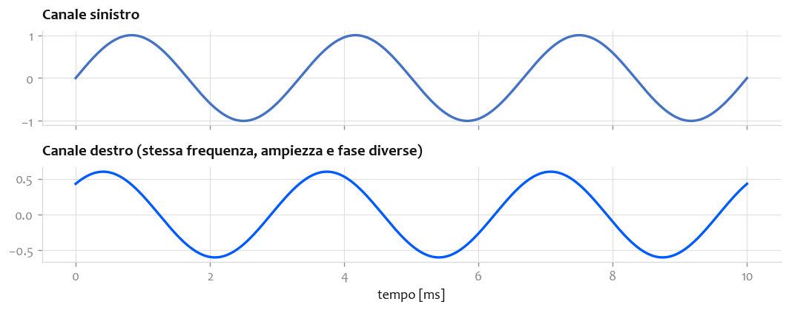
Guardare e ascoltare un segnale con Python
Un esempio minimo: leggere un file, disegnare i due canali e ascoltarlo. Nel prosieguo del corso useremo soundfile per leggere e scrivere i file, librosa per l’analisi, matplotlib per i grafici.
Nel capitolo successivo vedremo come questa forma d’onda continua venga trasformata in una sequenza di numeri: campionamento, quantizzazione e formati.
1.7 L’orecchio umano
L’orecchio è uno degli organi sensoriali più sofisticati e vitali del corpo umano, e la sua funzione, pur apparentemente ovvia, merita di essere approfondita per comprendere appieno la complessità del meccanismo che ci consente di percepire i suoni. Comunemente si associa il termine “orecchio” alla sola parte esterna e visibile, il padiglione auricolare, ma in realtà questa rappresenta solo una minima porzione di un sistema ben più articolato.
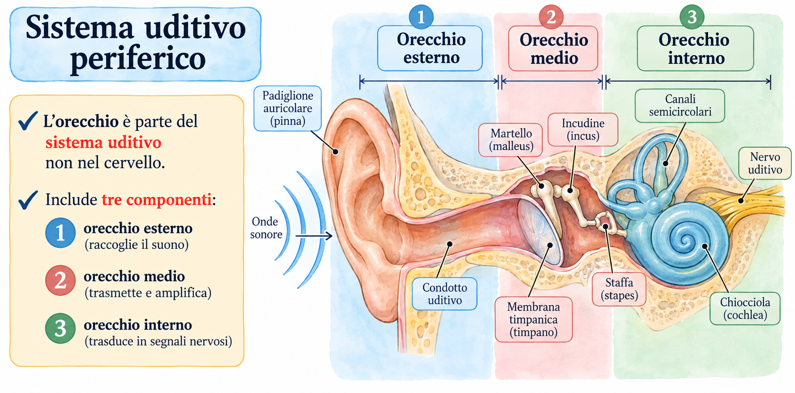
Il sistema uditivo come trasduttore
L’orecchio non si limita a “sentire”, ma agisce come un trasduttore naturale, ossia un sistema capace di trasformare l’energia meccanica delle onde sonore (variazioni di pressione dell’aria provocate da sorgenti vibranti, come una voce, uno strumento musicale o il rumore di un’esplosione) in segnali elettrici interpretabili dal cervello. Questo processo non è solo una conversione fisica, ma un’interazione dinamica e complessa che consente di tradurre il mondo sonoro in percezioni e significati.
Tecnicamente, l’orecchio svolge la funzione di un trasduttore energetico che trasferisce energia sonora da un punto all’altro dello spazio, trasformandola in segnali bioelettrici che viaggiano attraverso il sistema nervoso fino al cervello. Durante questo percorso, l’energia sonora subisce diverse trasformazioni:
energia meccanica, captata e amplificata dal sistema uditivo esterno e medio;
energia idrodinamica, attraverso la trasmissione del movimento nei liquidi presenti nell’orecchio interno;
energia elettrica, generata dalle cellule ciliate della coclea e inviata al cervello tramite il nervo uditivo.
L’orecchio è costituito da tre sezioni principali, ciascuna con un ruolo specifico nel processo di percezione sonora:
Orecchio esterno: comprende il padiglione auricolare e il condotto uditivo esterno. Ha la funzione di raccogliere le onde sonore e convogliarle verso l’orecchio medio, amplificando alcune frequenze per favorire una migliore discriminazione del suono.
Orecchio medio: contiene la membrana timpanica (timpano) e la catena ossiculare (martello, incudine e staffa). Questa sezione converte l’energia delle onde sonore in vibrazioni meccaniche, amplificandole per trasmetterle all’orecchio interno.
Orecchio interno: è il cuore del sistema uditivo, dove si trova la coclea, una struttura a spirale piena di liquido che ospita le cellule ciliate, responsabili della conversione delle vibrazioni in impulsi elettrici. Accanto alla funzione uditiva, l’orecchio interno è anche coinvolto nell’equilibrio grazie al sistema vestibolare.
Ogni parte dell’orecchio collabora in un delicato equilibrio per garantire la percezione uditiva. Dai suoni più deboli ai rumori più intensi, il sistema uditivo si adatta e risponde con una precisione straordinaria. Questa capacità non solo ci permette di apprezzare il mondo sonoro che ci circonda, ma gioca un ruolo cruciale nella comunicazione, nella socializzazione e nella nostra sopravvivenza.
L’orecchio esterno
L’orecchio esterno rappresenta il primo passo nel complesso processo di percezione del suono. È composto dal padiglione auricolare e dal condotto uditivo esterno, che terminano nella membrana timpanica. Sebbene possa sembrare una semplice parte anatomica, l’orecchio esterno svolge funzioni essenziali per la raccolta e l’elaborazione iniziale delle onde sonore, così come per la protezione delle strutture uditive interne.
Il padiglione auricolare è la parte visibile dell’orecchio esterno, costituito da cartilagine elastica ricoperta di pelle. Le sue principali funzioni includono:
Raccolta delle onde sonore. Il padiglione auricolare funge da “antenna” naturale, catturando una porzione significativa delle onde acustiche che lo raggiungono. L’efficacia di questa raccolta è proporzionale all’area del padiglione, il cui design a forma di conca amplifica alcune frequenze del suono, migliorando la sensibilità uditiva. Le onde raccolte vengono convogliate nel condotto uditivo esterno per raggiungere il timpano.
Localizzazione della sorgente sonora. Grazie alla particolare forma del padiglione e alla presenza di due orecchie simmetriche, il sistema uditivo è in grado di determinare con precisione la direzione da cui proviene un suono. Questo processo, noto come localizzazione sonora, sfrutta sia le differenze di intensità che di tempo di arrivo del suono tra i due orecchi, consentendo di individuare la posizione della sorgente in uno spazio tridimensionale.
Protezione della membrana timpanica. Il padiglione auricolare, insieme al condotto uditivo, contribuisce a proteggere il timpano da possibili lesioni meccaniche. La struttura ripiegata del padiglione e l’andamento curvilineo del condotto riducono la probabilità che oggetti estranei raggiungano la membrana timpanica.
Regolazione delle condizioni ambientali. Il padiglione auricolare e il condotto uditivo esterno mantengono il timpano in condizioni ottimali di temperatura, umidità e lubrificazione. Questa funzione è cruciale per preservare l’elasticità e la reattività della membrana timpanica, garantendo una corretta trasmissione delle vibrazioni sonore.
Il condotto uditivo esterno è un canale sottile, lungo circa 22-25 mm e con un diametro medio di 7,5 mm, che collega il padiglione auricolare alla membrana timpanica. Sebbene la sua funzione principale sembri essere semplicemente quella di trasportare le onde sonore verso il timpano, il condotto uditivo ha un ruolo molto più significativo.
Risonanza acustica. La lunghezza del condotto uditivo è un elemento chiave nel determinare le frequenze di massima sensibilità uditiva. Trattandolo come un tubo chiuso a un’estremità (il timpano) e aperto all’altra, esso entra in risonanza acustica intorno ai 2700 Hz. Tuttavia, l’interazione con altre strutture uditive sposta la regione di massima sensibilità a circa 3800 Hz, migliorando l’udito nelle frequenze più rilevanti per la comunicazione umana.
Protezione e pulizia. Il condotto uditivo esterno è dotato di ghiandole ceruminose che producono cerume, una sostanza che ha la funzione di intrappolare particelle di polvere e piccoli corpi estranei, impedendo loro di raggiungere il timpano. Inoltre, il cerume ha proprietà antibatteriche e aiuta a mantenere il condotto lubrificato.
Amplificazione sonora. Il condotto uditivo amplifica naturalmente alcune frequenze, specialmente nella gamma di 2000-4000 Hz, migliorando l’intelligibilità del parlato umano e contribuendo a una percezione più chiara dei suoni in questo intervallo.
L’orecchio esterno, pur rappresentando solo la prima parte del sistema uditivo, svolge un ruolo cruciale nella raccolta e nell’elaborazione iniziale delle onde sonore. La sua progettazione evolutiva non solo ottimizza la sensibilità uditiva, ma protegge anche le delicate strutture interne.
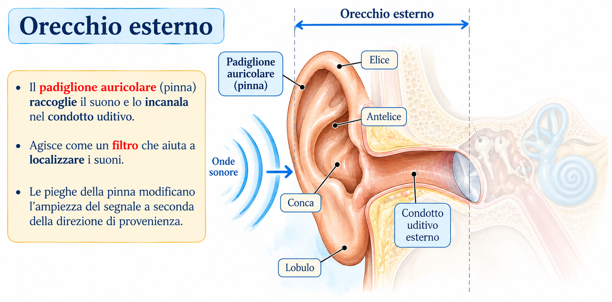
L’orecchio medio
L’orecchio medio è costituito dalla membrana timpanica, da una catena di tre ossicini (martello, incudine e staffa) e da una seconda membrana, la finestra ovale, che rappresenta l’accesso all’orecchio interno. Questa complessa struttura svolge un ruolo cruciale nella trasmissione e amplificazione delle onde sonore provenienti dall’esterno, preparandole per l’elaborazione successiva nell’orecchio interno.
Il timpano è una membrana sottilissima e altamente elastica, mantenuta in tensione dal muscolo timpanico. Questa membrana entra in vibrazione quando colpita dalle onde sonore che giungono attraverso il condotto uditivo esterno. Le proprietà elastiche del timpano, combinate con un meccanismo di amplificazione, gli conferiscono una sensibilità straordinaria. Basti pensare che:
una pressione sonora di appena 0,2 miliardesimi della pressione atmosferica è sufficiente a innescare una sensazione sonora;
a questa pressione, lo spostamento del timpano è dell’ordine di \(10^{-9}\) cm, ovvero circa un decimo del raggio di un atomo di idrogeno.
Gli ossicini dell’orecchio medio formano una catena articolata che trasferisce le vibrazioni del timpano alla finestra ovale, amplificando nel contempo l’energia del suono:
Struttura e connessioni. Il martello è direttamente collegato al timpano e trasmette le vibrazioni all’incudine, con cui è articolato. L’incudine, a sua volta, comunica con la staffa, che spinge contro la membrana della finestra ovale.
Amplificazione sonora. Sebbene il sistema degli ossicini non sfrutti il principio della leva meccanica in modo significativo (il guadagno è di circa 1,3 volte), l’effettiva amplificazione della pressione sonora avviene grazie a una riduzione dell’area su cui la forza viene applicata: l’area della finestra ovale (\(3,2\,mm^2\)) è circa 17 volte più piccola rispetto all’area efficace del timpano (\(55\,mm^2\)). Questo rapporto genera un aumento della pressione di circa 22 volte (\(1,3\) dal guadagno meccanico \(\times\)\(17\) dalla riduzione dell’area).
Trasferimento della pressione al liquido cocleare. L’aumento di pressione è fondamentale per trasmettere efficacemente l’energia sonora ai fluidi all’interno della coclea. Poiché i liquidi sono sostanzialmente incomprimibili, secondo il principio di Pascal la pressione esercitata sulla finestra ovale si distribuisce uniformemente attraverso tutto il fluido cocleare.
Grazie a questo sofisticato sistema, l’orecchio medio è in grado di trasferire e amplificare efficacemente le onde sonore, garantendo un adattamento ottimale tra l’ambiente esterno e l’orecchio interno. Questa ingegnosa soluzione naturale è essenziale per la nostra capacità di ascolto e comprensione dei suoni.
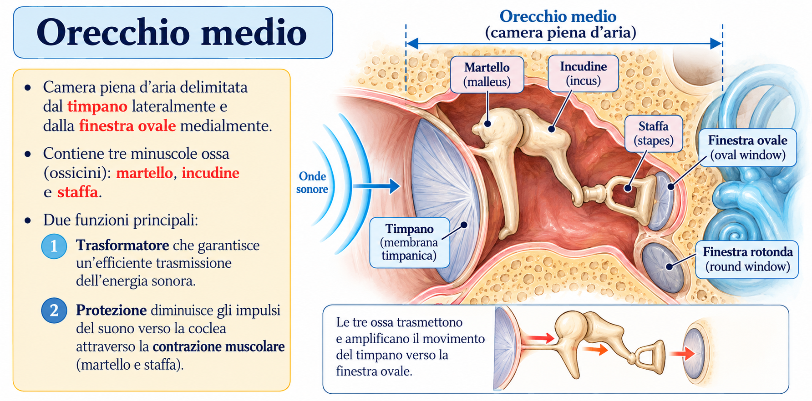
L’orecchio interno e la coclea
L’orecchio interno è costituito da un insieme di cavità ossee scavate nell’osso temporale, dette labirinto osseo, all’interno delle quali sono presenti altre cavità più piccole, che costituiscono il labirinto membranoso e le cui pareti risultano membranose. Tra le due porzioni di labirinto è presente un liquido, la perilinfa, mentre internamente agli organi del labirinto membranoso è presente un liquido diverso, l’endolinfa. Entrambi i labirinti possono essere a loro volta divisi in tre parti: una cavità centrale detta vestibolo; tre canali a forma anulare, detti canali semicircolari, che giocano un ruolo fondamentale nell’equilibrio; e un canale a forma di serpente detto coclea o chiocciola.
Quest’ultima ha lo scopo di separare i suoni in diverse componenti di frequenza prima di trasmetterli ai nervi. La coclea, situata in basso e lateralmente rispetto al vestibolo, sviluppa al suo interno il canale cocleare, che inizia in corrispondenza del pavimento del vestibolo e si avvolge ad elica, formando circa tre giri a partire dalla cassa timpanica fino alla cupola della chiocciola. La chiocciola è formata da una lamina spirale, sottile ed ossea, che attraversa nel senso della lunghezza il dotto cocleare. Dal lato esterno della lamina partono due membrane: quella vestibolare o del Reissner e quella basilare. Entrambe raggiungono la parete laterale del dotto cocleare. L’interno della coclea è quindi diviso in uno spazio al di sopra della lamina di Reissner, che corrisponde alla rampa vestibolare, uno al di sotto della membrana basale o rampa timpanica, e uno situato in mezzo, chiamato rampa media. Compresa tra la cassa timpanica e la rampa si trova la finestra rotonda, chiusa da una membrana di connettivo, atta a regolare e a garantire la giusta pressione dell’orecchio interno quando si verificano vibrazioni della finestra ovale. Sulla membrana basilare, rivestita da epitelio, si differenzia l’organo spirale o del Corti, che rappresenta l’organo acustico vero e proprio, perché contiene i recettori dell’udito, e ha una struttura cellulare fatta di un doppio ordine di cellule acustiche ciliate, interne ed esterne, in numero di circa 20.000.
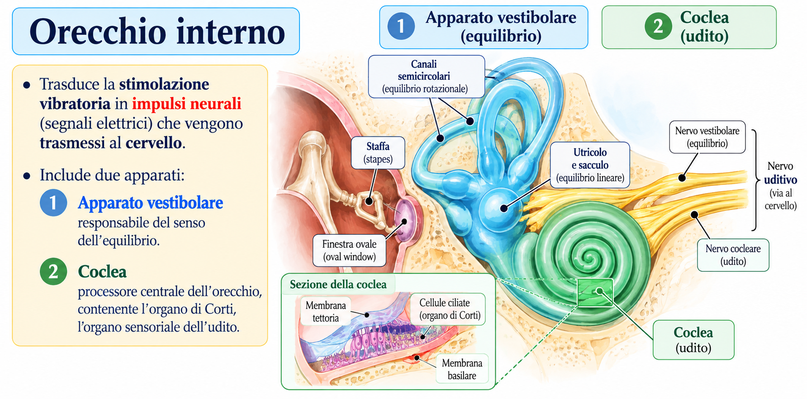
Dunque l’orecchio esterno focalizza e amplifica le onde sonore, che mettono in vibrazione il timpano auricolare, e le dirige verso l’orecchio medio. Nell’orecchio medio, l’energia di queste onde viene trasformata in vibrazioni meccaniche della struttura ossea (energia cinetica). Uno dei tre ossicini della catena, la staffa, muovendosi avanti e indietro entro la finestra ovale della coclea trasmette l’impulso cinetico alla perilinfa in essa contenuta; attraverso l’endolinfa del condotto cocleare le onde vengono trasmesse dalla rampa vestibolare alla rampa timpanica, e quindi entrano in vibrazione anche le membrane che separano le rampe della coclea.
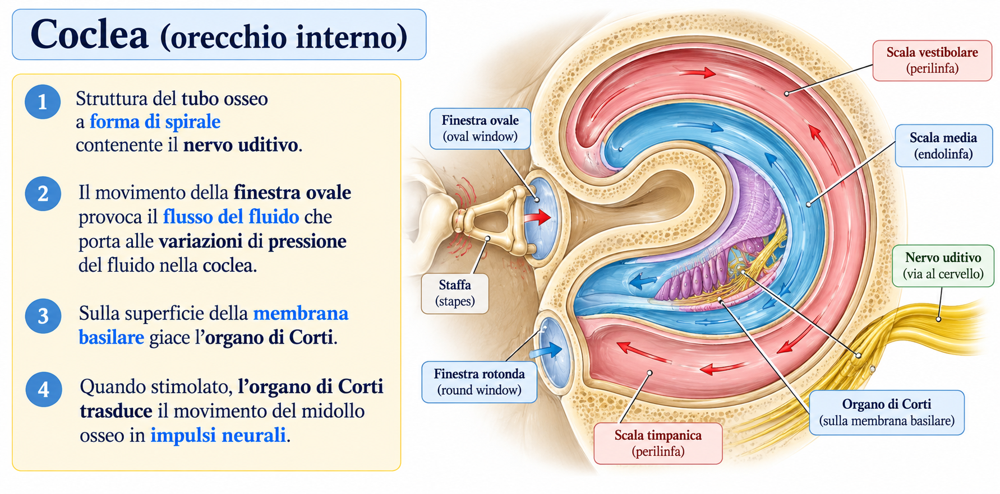
Il segnale arriva così alla membrana basilare, che separa la rampa vestibolare da quella timpanica, e dove si trova l’organo del Corti. Le cellule acustiche in esso contenute sono in contatto con le cellule nervose che fanno parte del nervo vestibolo cocleare. Di lì il segnale, che nella coclea viene trasdotto (l’energia cinetica diventa energia elettrochimica), giunge all’area acustica della corteccia cerebrale, e poi al lobo temporale del cervello: qui avviene la decodificazione dell’impulso elettrico, e si giunge così alla percezione del suono.
L’organo del Corti è la struttura anatomica alla base dell’udito, il dispositivo recettoriale deputato alla percezione dei suoni. Si trova in quella formazione spiraliforme chiamata chiocciola o coclea, che costituisce la sezione uditiva dell’orecchio interno (l’altro suo settore, il complesso vestibolare, provvede invece a gestire il senso dell’equilibrio). La chiocciola è un tubicino arrotolato che risulta suddiviso al proprio interno in tre compartimenti longitudinali ricolmi di liquido: superiore, intermedio e inferiore. Il piano intermedio si chiama dotto cocleare e sul suo pavimento, denominato membrana basilare, si trova l’organo del Corti: un sofisticato dispositivo che contiene circa 16.000 cellule ciliate uditive, che rappresentano i recettori per le stimolazioni sonore.
L’organo del Corti è formato da cellule di sostegno e cellule acustiche. Le prime descrivono due serie cellulari lineari, allungate e leggermente ricurve, i pilastri (esterno e interno), che vanno a impiantarsi sulla membrana basilare, distanziati in basso e uniti all’apice, delimitando così uno spazio a sezione triangolare, la galleria del Corti, che percorre tutto il condotto cocleare. Medialmente ai pilastri interni si trovano, disposte su una fila, le cellule sensoriali acustiche, che si organizzano invece in tre o quattro filari lateralmente ai pilastri esterni. Le prime sono all’incirca 3.500, dislocate per l’intera lunghezza dell’organo dell’udito, mentre le altre toccano quota 13.000. Mostrano una forma cilindrica, con la superficie apicale spessa e piatta. Dall’apice di ognuno di questi elementi cellulari specializzati spuntano da 20 a 100 esili propaggini chiamate stereociglia o peli acustici, le quali stringono contatti ravvicinati con una struttura flessibile sovrastante, denominata membrana tectoria, una lamina nastriforme di matrice extracellulare, costituita da mucopolisaccaridi e fasci di fibrille di collagene, che si avvolge a spirale lungo tutta l’estensione della coclea.
Proviamo ad analizzare adesso che cosa succede quando l’orecchio viene raggiunto da un suono. Le onde sonore che si propagano nell’aria vengono captate dal padiglione auricolare, il quale provvede a raccoglierle e a convogliarle nel condotto uditivo esterno, che si addentra nello spessore dell’osso temporale fino a raggiungere la sottile membrana del timpano. Questa, colpita dalle onde sonore, vibra e trasferisce i micromovimenti alla catena mobile dei tre ossicini, tesa tra la membrana timpanica e la finestra ovale, ovvero il varco che consente l’accesso al compartimento della chiocciola.
La pressione che viene esercitata sulla finestra ovale dal moto vibratorio produce un movimento ondulatorio nel fluido presente nell’orecchio interno: lo spostamento dell’aria diventa un’onda liquida. La membrana basilare comincia allora a oscillare in sincronia con l’onda pressoria e, poiché essa sostiene l’organo del Corti, anche le cellule ciliate uditive iniziano a muoversi, flettendosi avanti e indietro e variando la loro posizione rispetto alla membrana tectoria in alto, che è fissa e appoggiata sopra i peli acustici. La deformazione meccanica delle ciglia finisce per stimolare le fibre nervose che costituiscono il nervo acustico: questo provvederà a trasmettere gli impulsi all’encefalo, alla corteccia uditiva del lobo temporale, dove i segnali nervosi verranno tradotti in sensazioni sonore. In particolare, le onde che giungono alla membrana basilare sono tali che ogni frequenza sonora stimola una specifica regione: le alte frequenze attivano la base della coclea, mentre le basse frequenze stimolano l’apice. È il principio di funzionamento su cui si basano, come vedremo, la scala Mel e le feature percettive usate nei sistemi di riconoscimento automatico.
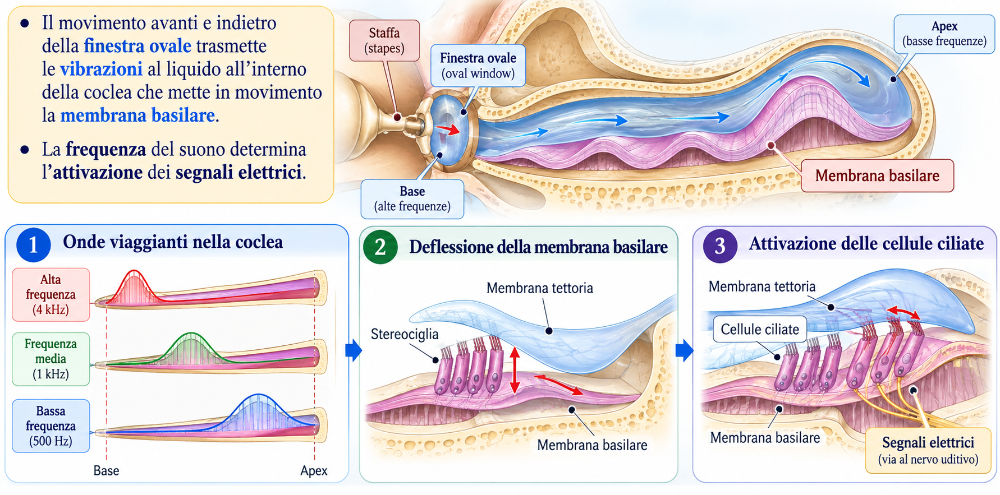
Limitazioni dell’orecchio umano
In musica le frequenze sono misurate in hertz (Hz). Lo spettro approssimativo delle frequenze che l’orecchio umano può udire va da circa 20 Hz fino a 20.000 Hz. Per frequenze al di fuori di questo intervallo non c’è risonanza nella membrana basilare. L’intensità del suono è misurata in decibel (dB). Zero decibel rappresentano un’intensità di potenza pari a \(10^{-12}\) watt per metro quadrato, che è quindi in qualche modo il suono più debole che possiamo percepire. Aggiungere 10 dB equivale a moltiplicare l’intensità di potenza per un fattore 10. Viceversa, moltiplicare l’intensità per un fattore \(b\) equivale ad aggiungere \(2\log_{10}(b)\) decibel al livello del segnale. Quindi la scala per misurare l’intensità dei suoni è logaritmica, e \(n\) decibel rappresentano una densità di potenza di \(10^{n/10}\cdot 10^{-12}\) watt per metro quadrato.
La soglia di udibilità è il livello del suono più debole che possiamo udire. Il suo valore in decibel varia da una parte all’altra dello spettro di frequenze. Le nostre orecchie sono più sensibili alle frequenze leggermente sopra i 2000 Hz, dove la soglia di udibilità della maggior parte delle persone è leggermente superiore a 0 dB. A 100 Hz la soglia di udibilità è di circa 50 dB e a 10 Hz è di circa 30 dB. Una conversazione normale avviene a circa 60-70 dB, mentre il bisbiglio è circa 15-20 dB, e la soglia del dolore è a circa 130 dB.
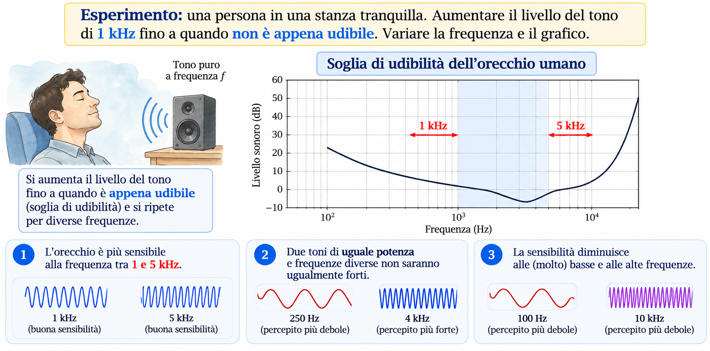
Vi è dunque una relazione stretta, anche se non un’identità, fra l’intensità del suono e la percezione di rumorosità. Il grafico seguente, che si deve a Fletcher e Munson, mostra attraverso una serie di curve il rapporto, per tutte le frequenze udibili, tra la pressione acustica e la corrispondente “rumorosità” percepita dall’orecchio, per vari gradi d’intensità, dalla soglia di udibilità a quella del dolore. L’unità di misura per la sensazione che recepiamo (cioè per la rumorosità) è il phon: l’ascoltatore regola il livello del segnale fino a quando lo giudica di intensità pari a un’intensità standard di 1000 Hz, e il livello in phon è definito come il livello di pressione del segnale di 1000 Hz della stessa intensità. Le curve di questo grafico sono chiamate curve isofoniche.
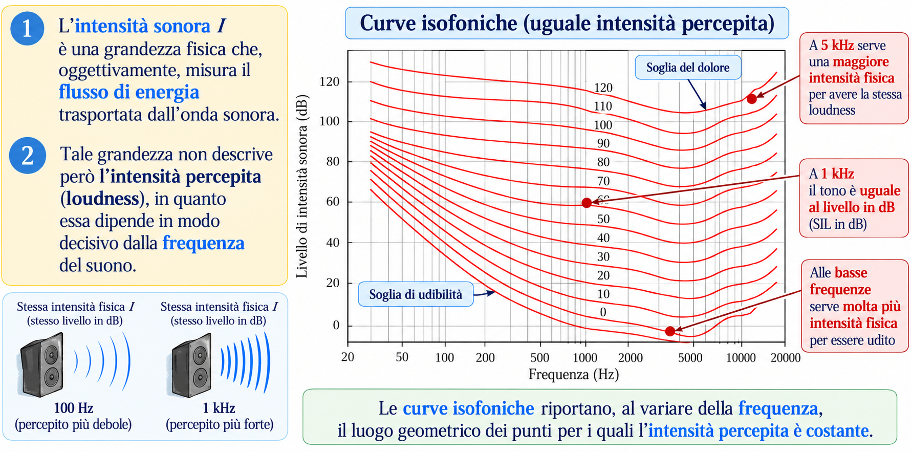
Frequenza è fisica; altezza (pitch) è percettiva.
Intensità/SPL sono fisici; loudness è percettiva e dipende anche dalla frequenza, dalla durata e dall’ascoltatore.
Spettro/inviluppo sono descrizioni fisiche; timbro è l’esito percettivo complessivo.
NotaDemo 13 — Stessa ampiezza digitale, sensazioni diverse
A parità di ampiezza digitale l’ascolto cambia molto con la frequenza: il codice mette a confronto alcuni casi e commenta la sensazione. Serve a mostrare che il numero nel file non è la sonorità.
Al primo avvio: Run → Run All Cells. Poi modificare la demo e rieseguirla con Shift + Invio. Apri in una scheda separata ↗
Domanda: sono percepiti ugualmente forti? La risposta attesa è spesso “no”. Questa prova non misura curve isofoniche: mostra soltanto perché ampiezza numerica e loudness non vanno identificate.
1.8 Sintesi e collegamento dei risultati
I concetti fisici, le scale logaritmiche e i meccanismi percettivi studiati in questo capitolo collegano il fenomeno acustico al segnale registrato:
Concetto / Obiettivo
Strumento e formula
Verifica decisiva
Propagazione ondulatoria
\(v = \lambda f = \frac{\lambda}{T}\) (\(v \approx 343\text{ m/s}\) in aria a \(20\,^\circ\text{C}\))
Le particelle oscillano attorno all’equilibrio; ad avanzare è la perturbazione di pressione
Eco e riflessione
Distanza parete \(D = \frac{v\,\Delta t}{2}\)
L’eco si distingue come ripetizione separata solo se \(\Delta t \gtrsim 0{,}1\text{ s}\) (\(D \gtrsim 17\text{ m}\))
Poiché \(I \propto p_{\text{rms}}^2\), il fattore \(10\) sull’intensità coincide col fattore \(20\) sulla pressione; due sorgenti incoerenti uguali danno \(+3\text{ dB}\)
I modi normali selezionano multipli interi della fondamentale \(f_1\), determinando altezza e timbro
Forma d’onda e canali stereo
Segnale \(x(t)\) (mono) o coppia \((x_L(t), x_R(t))\) (stereo)
Dalla forma d’onda si leggono durata, inviluppo e picchi; differenze di tempo (ITD) e livello (ILD) tra canali creano la scena spaziale
Trasduzione cocleare e loudness
Organo del Corti e curve isofoniche (phon, Fletcher–Munson)
La coclea separa le frequenze lungo la membrana basilare (base = acuti, apice = gravi); a parità di dB SPL la sensibilità è massima tra \(2\) e \(5\text{ kHz}\)
Tre idee da portare al capitolo successivo
Dal fenomeno fisico al segnale: un suono è un’onda di pressione che si propaga in un mezzo elastico e viene tradotta dal microfono (o dall’orecchio) in una forma d’onda temporale descritta da ampiezza, frequenza, fase e composizione armonica.
Perché contiamo in decibel: la dinamica dell’udito copre sei ordini di grandezza in pressione e dodici in potenza; le scale logaritmiche (\(\text{dB SPL}\), \(\text{dB SIL}\) e i decibel relativi al fondo scala digitale) comprimono questo intervallo e riflettono la risposta percettiva.
Ciò che la forma d’onda non mostra a colpo d’occhio: il grafico nel tempo rende immediatamente visibili durata, attacchi, silenzi e differenze fra canali, ma nasconde quali frequenze compongono il timbro — il problema che risolveremo nel Capitolo 2 con il campionamento digitale e la trasformata di Fourier.
Il laboratorio associato a questo capitolo si svolge sui notebook della Lezione 1, che usano le funzioni base di audiolab (documentate in Appendice B — Manuale delle funzioni audiolab):
Le domande propongono risposte aperte brevi su concetti, metodi e aspetti tecnici. Le formule sono riportate quando aiutano a precisare il concetto. Le risposte sono richiudibili per consentire prima una verifica autonoma.
1. Come si distingue il suono come fenomeno fisico dal suono come esperienza percettiva?
Mostra la risposta
Fisicamente è una perturbazione meccanica che si propaga in un mezzo; percettivamente è la sensazione prodotta dal sistema uditivo. Pressione, frequenza e struttura temporale e spettrale contribuiscono rispettivamente alla sonorità, all’altezza e al timbro, senza una corrispondenza percettiva rigidamente univoca.
2. Quando una voce raggiunge un ascoltatore, che cosa si propaga e che cosa oscilla nel mezzo?
Mostra la risposta
Le particelle del mezzo oscillano attorno alla posizione di equilibrio; si propagano la perturbazione e l’energia, non un flusso d’aria dalla bocca all’ascoltatore. Nell’aria l’onda sonora alterna compressioni e rarefazioni ed è prevalentemente longitudinale.
3. Perché il suono non attraversa il vuoto e perché la sua velocità cambia fra aria, acqua e solidi?
Mostra la risposta
Il suono richiede un mezzo materiale che trasmetta la perturbazione. La velocità dipende dalle proprietà elastiche e dall’inerzia del mezzo: un mezzo più rigido può trasmettere il suono più rapidamente, anche se più denso. La sola distanza fra molecole non basta a spiegare la velocità.
4. Qual è la differenza fra riflessione, rifrazione e diffrazione del suono? Quale esempio illustra ciascun fenomeno?
Mostra la risposta
La riflessione rimanda l’onda da una superficie, come nell’eco. La rifrazione cambia la direzione di propagazione quando varia la velocità del suono, per esempio fra strati d’aria a temperatura diversa. La diffrazione permette all’onda di aggirare ostacoli o allargarsi oltre un’apertura, rendendo udibile una voce dietro un angolo.
5. Perché una riflessione può essere percepita come eco oppure fondersi con il suono diretto?
Mostra la risposta
Contano il ritardo, il livello e il contenuto della riflessione rispetto al suono diretto. Una riflessione sufficientemente ritardata può essere riconosciuta come ripetizione; molte riflessioni ravvicinate si fondono e producono riverbero. La separazione percettiva dipende anche dal tipo di suono e dal contesto.
6. Come si esprime una sinusoide e quali relazioni legano periodo, frequenza e lunghezza d’onda?
Mostra la risposta
Una sinusoide si scrive \(x(t)=A\cos(2\pi ft+\varphi)\): \(A\) è l’ampiezza, \(f\) la frequenza e \(\varphi\) la fase iniziale. Il periodo è \(T=1/f\) e la lunghezza d’onda è \(\lambda=cT=c/f\), con \(c\) velocità di propagazione. La frequenza misura i cicli al secondo, la lunghezza d’onda la distanza percorsa in un ciclo.
7. Qual è la differenza fra pressione sonora, intensità e potenza acustica?
Mostra la risposta
La pressione sonora descrive la variazione locale di pressione provocata dall’onda. L’intensità descrive quanta energia attraversa una superficie per unità di area e di tempo; la potenza indica quanta energia acustica emette complessivamente la sorgente per unità di tempo. Sono quindi grandezze legate, ma descrivono aspetti diversi del fenomeno.
8. Come si definiscono i livelli di intensità e pressione sonora in decibel e che cosa esprimono?
Mostra la risposta
Si definiscono \(L_I=10\log_{10}(I/I_0)\) e \(L_p=20\log_{10}(p_{\mathrm{rms}}/p_0)\), dove \(I\) è l’intensità e \(p_{\mathrm{rms}}\) la pressione efficace. In aria i riferimenti sono \(I_0=10^{-12}\,\mathrm{W/m^2}\) e \(p_0=20\,\mu\mathrm{Pa}\). Questi livelli esprimono il rapporto rispetto al riferimento su scala logaritmica: 0 dB indica uguaglianza al riferimento, non assenza di suono.
9. Perché i livelli sonori si esprimono in decibel invece di usare soltanto una scala lineare?
Mostra la risposta
Le intensità sonore possono variare su un intervallo molto ampio. La scala logaritmica dei decibel rende questo intervallo più maneggevole ed esprime le variazioni come rapporti rispetto a un riferimento. Aumenti uguali in dB corrispondono a uguali fattori moltiplicativi dell’intensità, non a uguali incrementi assoluti.
10. Come possono due strumenti produrre la stessa nota ed essere comunque riconoscibili?
Mostra la risposta
Possono condividere l’altezza ma differire per distribuzione delle componenti spettrali, rumore, attacco e decadimento. Il timbro dipende quindi sia dalla composizione in frequenza sia dalla sua evoluzione temporale; non è descritto dalla sola frequenza fondamentale.
11. Che cosa distingue l’interferenza fra due toni alla stessa frequenza dai battimenti fra toni vicini?
Mostra la risposta
Alla stessa frequenza, la differenza di fase determina un rinforzo o un’attenuazione stabile; la cancellazione completa richiede ampiezze uguali e opposizione di fase. Per due toni di uguale ampiezza, \(\cos(2\pi f_1t)+\cos(2\pi f_2t)=2\cos[\pi(f_1-f_2)t]\cos[\pi(f_1+f_2)t]\). Se le frequenze sono vicine, si percepiscono battimenti a \(f_b=|f_1-f_2|\).
12. Come nasce un’onda stazionaria e perché una corda fissata ai due estremi ammette soltanto determinati modi di vibrazione?
Mostra la risposta
La sovrapposizione di onde opposte può produrre nodi fermi e ventri di massima oscillazione. Gli estremi fissi impongono \(L=n\lambda_n/2\): sulla corda entrano soltanto numeri interi di semilunghezze d’onda. Nel modello ideale \(f_n=nc/(2L)=nf_1\), con \(L\) lunghezza, \(c\) velocità sulla corda e \(n=1,2,\ldots\).
13. Quali proprietà si possono controllare nella forma d’onda di una registrazione e quali richiedono l’analisi spettrale?
Mostra la risposta
Si controllano durata, pause, inviluppo, picchi, eventuali saturazioni e differenze fra canali. La forma d’onda non rende immediata la separazione delle componenti in frequenza: per identificare armoniche, risonanze o disturbi tonali si usano spettro e spettrogramma. L’ampiezza digitale da sola non misura la sonorità percepita.
14. Qual è la differenza fra un segnale mono e un segnale stereo?
Mostra la risposta
Un segnale mono ha un solo canale; un segnale stereo ha due canali, sinistro e destro. Le differenze fra i due canali possono creare un’impressione di posizione e spazialità. Duplicare lo stesso segnale su entrambi i canali non aggiunge invece informazione stereo.
15. Quali sono i ruoli principali dell’orecchio esterno, medio e interno nella percezione del suono?
Mostra la risposta
L’orecchio esterno raccoglie e filtra il suono; timpano e ossicini nell’orecchio medio trasmettono le vibrazioni al liquido cocleare adattando l’impedenza. Nella coclea, regioni diverse rispondono a frequenze diverse e le cellule ciliate trasformano il movimento in segnali per il sistema nervoso.
16. Due toni hanno la stessa pressione efficace ma sembrano di volume diverso. Come si può spiegare e verificare questa osservazione?
Mostra la risposta
La sensibilità uditiva varia con la frequenza e con il livello: uguale pressione non implica uguale sonorità. Le curve isofoniche descrivono questa relazione. Per un confronto controllato si mantengono costanti durata, sistema di riproduzione e condizioni d’ascolto, distinguendo la misura fisica dal giudizio percettivo.
1.12 Slide della lezione
Sfoglia le slide direttamente qui sotto (frecce ←→ o barra spaziatrice per avanzare, F per lo schermo intero) oppure aprile in una scheda dedicata.
Lezione 1 — Il suono: fisica, percezione e rappresentazione digitaleClicca sulle slide e usa ← → per navigare · tasto F per schermo intero · S per le note
Riepilogo compatto di tutte le formule fisiche, le scale in decibel, i principi psicoacustici e le API audiolab della Lezione 1, consultabile qui sotto oppure apribile e stampabile in una scheda separata.
4. Psicoacustica, orecchio umano e ascolto spaziale
Orecchio esterno (risonanza a \(3\text{–}4\text{ kHz}\)) \(\to\)Orecchio medio (adattamento d’impedenza con gli ossicini) \(\to\)Coclea e membrana basilare (mappa tonotopica: alte frequenze alla base, basse frequenze all’apice).
Curve isofoniche e phon: a \(1000\text{ Hz}\) i phon coincidono con i \(\text{dB SPL}\); alle basse frequenze (\(<200\text{ Hz}\)) servono molti più \(\text{dB SPL}\) per ottenere la stessa sonorità percepita.
Localizzazione binaurale stereo:ITD (\(\Delta t \le 0{,}6\text{ ms}\), dominante sotto \(1{,}5\text{ kHz}\)) e ILD (differenza di livello per ombra acustica della testa, dominante sopra \(1{,}5\text{ kHz}\)).
5. Prontuario rapido delle funzioni audiolab (Lezione 1)
import numpy as npimport audiolab as al# 1. Generazione di sinusoidi e grafico della forma d'ondatono = al.sine(freq=440.0, duration=1.5, amplitude=0.3, phase=0.0, sr=al.SAMPLE_RATE)al.plot_waveform(tono, al.SAMPLE_RATE, max_time=0.01, title="Primi 10 ms a 440 Hz")# 2. Valore efficace (RMS), picco e conversione in decibel (dBFS)val_rms = al.rms(tono) # A / sqrt(2) per una sinusoidepicco, eff = al.peak_rms(tono) # restituisce (peak, rms)livello_db = al.to_db(eff) # 20 * log10(eff)ampiezza = al.from_db(-6.0) # 10 ** (-6 / 20) ≈ 0.501# 3. Somma in fase, controfase, battimenti e ascolto comparativos1 = al.sine(440.0, 2.0, amplitude=0.25, phase=0.0)s2_opposta = al.sine(440.0, 2.0, amplitude=0.25, phase=np.pi)battimenti = al.sine(440.0, 3.0, amplitude=0.25) + al.sine(444.0, 3.0, amplitude=0.25)al.compare_audio([("tono", s1), ("controfase", s1 + s2_opposta), ("battimenti 4 Hz", battimenti)])# 4. Panoramica stereo (ILD)stereo_ild = al.pan_stereo(tono, pan=0.6) # pan in [-1 (L), +1 (R)]